No hace falta saber de computación para ser Admin acá.
Buscá tu tarea en el índice y seguí los números de la imagen. Cada flecha
señala dónde mirar o pulsar; las indicaciones cortas están debajo. Los
números y recuadros son marcas de esta guía, no botones del sistema.
Sistema de Gestión y Reserva de Computadoras · versión 1.22.0
Texto revisado: 28 de octubre de 2026. Capturas: 26 de octubre de 2026. Las imágenes usan exclusivamente datos ficticios de demostración.
Un Admin es la persona que mantiene el laboratorio funcionando. El sistema le
da las herramientas; las decisiones las sigue tomando ella.
Tus cuatro tareas, en orden de importancia
Entregar y recibir. Cuando un docente viene a buscar las computadoras
que reservó, lo registrás; cuando las devuelve, también. Esto reemplaza al
cuaderno de papel y es lo único que hay que hacer todos los días.
Aprobar cuentas. Un docente que se registra no puede entrar hasta que
vos lo apruebes.
Mantener el inventario y las materias al día. Que las máquinas rotas
figuren como rotas, y que cada docente esté anotado en las materias que dicta.
Contestar los pedidos de ayuda. Del otro lado hay alguien esperando.
Lo que un Admin puede hacer y un docente no
Aprobar cuentas, cargar y editar computadoras, entregar y recibir, cargar
licencias, bloquear equipos para una evaluación, declarar el horario de la
escuela, ver los reportes de uso y contestar los pedidos de ayuda.
Todo queda registrado con tu nombre
Las acciones importantes —aprobar, dar de baja, cancelar la reserva de otro—
quedan guardadas con quién las hizo y cuándo. No es para controlarte: es para
que, cuando algo no cierre, se pueda reconstruir qué pasó.
2Tu pantalla de inicio: el mostrador
Está armada para el momento en que hay alguien esperando del otro lado del
mostrador: lo urgente arriba y a la izquierda.
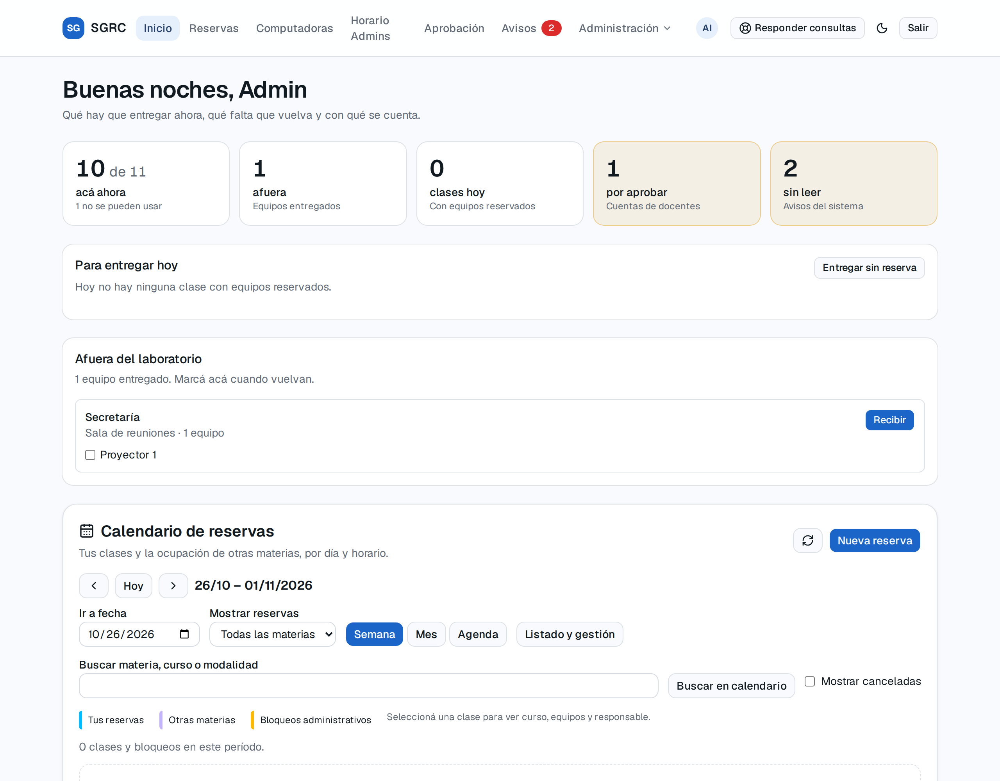
1Entregá sin reserva previa
2Registrá lo que vuelve
3Abrí las demás funciones
El mostrador, los equipos afuera y los accesos de administración.
Los números de arriba. Con cuántas máquinas contás acá ahora si
alguien golpea la puerta, cuántas están afuera, cuántas clases hay hoy,
cuántas cuentas esperan aprobación y cuántos avisos tenés sin leer. Es la
única franja de la pantalla que no crece: siempre son cinco números.
Para entregar hoy. Las clases del día, en orden, con la que está
pasando arriba y marcada En curso. Cada una dice
cuántas de sus computadoras ya salieron y trae el botón para entregar el
resto. Es lo primero que mirás cuando llega un docente.
Entregar sin reserva. Para cuando alguien pide algo en el momento, sin
haber reservado. Está en la cabecera de la cola.
Afuera del laboratorio. Lo que está fuera y todavía no volvió,
agrupado por quién lo tiene. Cuando devuelven, se marca acá.
Administración. El menú con todo lo demás.
Lo que viene. Lo reservado para los próximos días. Lo de hoy no
se repite acá: ya está arriba, en «Para entregar hoy», con más detalle.
Los cinco números de arriba
Si alguno está en cero, no hay nada pendiente de ese tipo. El de cuentas por
aprobar es el que más conviene mirar: detrás de cada una hay un docente que no
puede trabajar. Y el de equipos afuera se pone en color cuando alguno
pasó su hora de devolución.
3Dónde está cada cosa
En el teléfono, abrí Menú. Las tareas diarias quedan arriba; las
opciones ocasionales están dentro de Administración y configuración y
Reportes y auditoría. El menú se desplaza por dentro y conserva visible
el botón para cerrarlo. Mi cuenta y Responder consultas también
están allí.
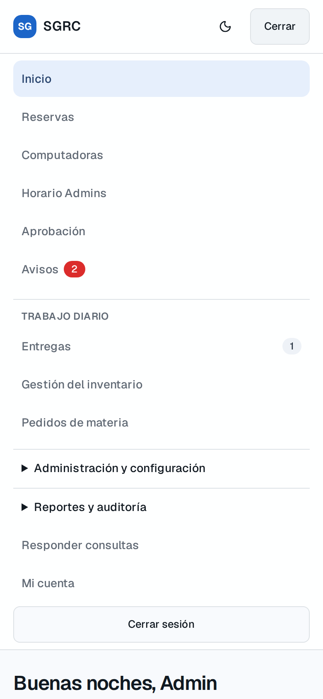
1Accedé a entregas
2Desplegá las opciones de administración
3Cerrá el menú para volver
En el teléfono, las tareas diarias quedan a mano y las opciones
ocasionales se despliegan por grupo.
En la barra de arriba, el menú Administración abre todo lo que es tuyo.
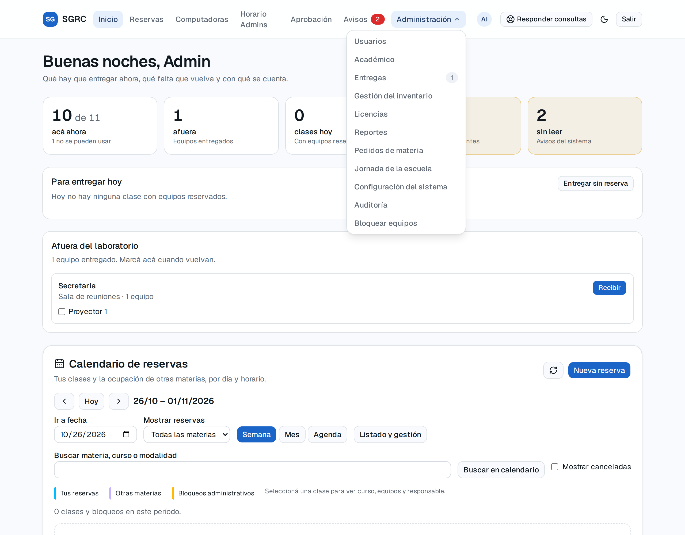
1Gestioná cuentas y permisos
2Organizá cursos y materias
3Ajustá plazos y avisos
El menú Administración, desplegado.
Usuarios — todas las cuentas: contraseñas, roles, bajas.
Académico — ciclos, cursos, materias y qué docente da cada una.
Entregas — entregar y recibir computadoras.
Gestión del inventario — carros y equipos: alta, edición, estado.
Licencias — qué software vence y cuándo.
Reportes — cuánto se usó cada máquina y cada docente.
Pedidos de materia — docentes que piden sumarse a una materia.
Jornada de la escuela — en qué días y horarios se puede reservar.
Bloquear equipos — tomar máquinas para una evaluación o una jornada.
Afuera del menú, en la misma barra, están Aprobación (las cuentas nuevas)
y Avisos, que es también donde se contestan los pedidos de ayuda.
4Aprobar las cuentas nuevas
Cuando alguien se registra, su cuenta queda esperando. Hasta que la apruebes,
no puede entrar.
Tocá Aprobación en la barra de arriba.
Mirá quién es y con qué email se registró. Si no lo reconocés,
preguntá antes de aprobar.
Tocá Aprobar, o Rechazar
si no corresponde.
Anotalo en su materia: eso se hace en Académico (capítulo 5). Sin
materia asignada, el docente entra pero no puede reservar.
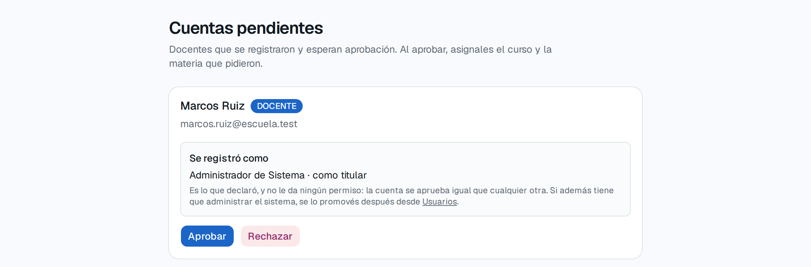
1Aprobá sólo si corresponde
2Rechazá una solicitud incorrecta
Una cuenta esperando aprobación.
Al registrarse te dejaron una pista
En el formulario de registro, la persona dijo con qué cargo se registra y
si es titular o suplente. Si es docente, además pudo indicar qué curso y
qué materia va a dictar. Todo eso llega junto con el pedido y es lo que mirás
para asignarlo correctamente.
«Administrador de Sistema» en la ficha no da permisos
Alguien puede haberse registrado como Administrador de Sistema —auxiliar
informático, administrador de red y demás cargos docentes que administran el
laboratorio sin dar clase—. Eso es solo lo que declaró: la cuenta se
aprueba igual que cualquier otra y queda como docente. Si además tiene que
administrar el sistema, se lo das vos después, desde Usuarios (capítulo
7), con Promover a admin. Aprobar nunca convierte a
nadie en Admin.
No dejes cuentas esperando
Una cuenta sin aprobar es un docente que no puede reservar. Por eso este aviso
llega por correo a todos los Admin y viene encendido de fábrica.
5Ciclos, cursos y materias
Es la base de todo. Un ciclo lectivo (el año) contiene cursos
(1°1, 2°B), cada curso tiene sus materias, y los docentes reservan
para una materia. Si esto no está cargado, nadie puede reservar nada.
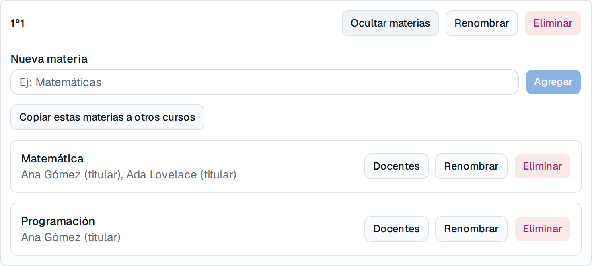
1Escribí la nueva materia
2Agregala al curso
3Asigná sus docentes
Las materias de 1°1 y sus docentes asignados en el ciclo activo.
Empezar el año
Cada materia reserva dentro de su año
Una materia del ciclo 2026 permite reservar del 1 de enero al 31 de diciembre
de 2026. Para reservar en 2027 se necesita la materia del ciclo 2027 y sus
docentes asignados. El sistema no mueve una serie al año siguiente ni cierra
el ciclo automáticamente al llegar a diciembre.
En Académico, escribí el año en Nuevo ciclo lectivo y tocá
Crear ciclo.
Abrí el ciclo con Cursos y agregá cada curso:
elegí el año y escribí la división como la nombra tu escuela — «A»,
«2», «1ra». Abajo ves cómo va a quedar el nombre («4°2») antes de agregarlo, con
el «°» que el sistema pone solo.
Si tus cursos no se dividen —pasa en muchos terciarios y universidades—
dejá la división vacía: el curso queda como «2°».
Si tu escuela tiene modalidades, orientaciones o carreras —Construcción,
Electromecánica, un bachiller— escribilas en Modalidad. Las que ya usaste
se te ofrecen como sugerencia. Si tu escuela no tiene ninguna, o si es un curso
del ciclo básico que no pertenece a una, dejalo vacío.
En cada curso, tocá Materias y agregá las materias
que se dictan ahí.
En cada materia, asigná los docentes que la dan, indicando si son
titular o suplente.
Puede haber varios titulares y suplentes
Una materia de un curso puede tener, por ejemplo, dos titulares y dos
suplentes. Las reservas se mantienen mientras quede algún docente asignado
con cuenta aprobada, sin importar su rol. La materia del mismo nombre en
otro año o división se administra por separado.
Al tocar Quitar, revisá la persona, la materia
y el curso en la confirmación. Volver no cambia
nada. Sólo cuando quitás al último docente se cancelan las reservas futuras
de esa materia y curso; la cuenta de la persona y sus otras materias se
conservan.
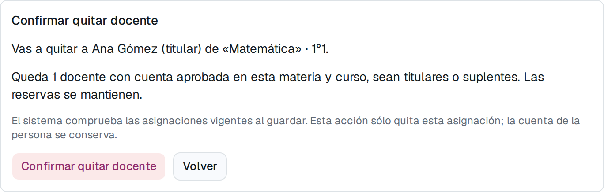
1Todavía queda otra cuenta: las reservas siguen
2Quitá sólo esta asignación
Si queda otra cuenta aprobada asignada a la misma materia y curso,
las reservas se mantienen.
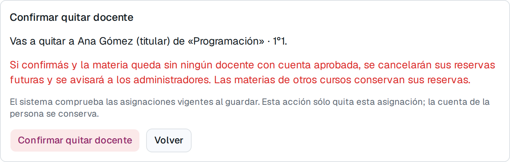
1Sin otra cuenta, se cancelan las futuras
2Volvé si necesitás asignar un reemplazo
Al quitar la última cuenta asignada, la confirmación advierte qué
reservas pueden cancelarse. Volver cierra sin aplicar cambios.
El sistema no te pide lo que tu escuela no tiene
El año va siempre —lo tienen todos los ámbitos—, pero la división y la
modalidad son opcionales. Una primaria no tiene modalidades; una técnica las
usa recién de 4° en adelante y deja el ciclo básico sin ninguna; un terciario tiene
carreras pero muchas veces no divide sus cursos. Completá lo que uses y dejá vacío
el resto.
Editar un curso que tiene prioridades
En Académico, abrí Cursos y tocá Renombrar en el curso.
Si cambiás el año, la división o la modalidad, el sistema revisa
las prioridades de sus computadoras antes de guardar. Leé qué materias y
equipos cambiarían y elegí si querés conservar las prioridades exactas con
el curso o aceptar el alcance que resulta del cambio. Una regla que también
beneficia a otros cursos se conserva para ellos.
Si cambió algo desde que abriste la revisión, se te pide revisar de nuevo.
Si existe otra prioridad incompatible en el destino, resolvela primero en
Inventario. No confirmes suponiendo que cambiar una división es sólo cambiar
el texto que aparece en pantalla.
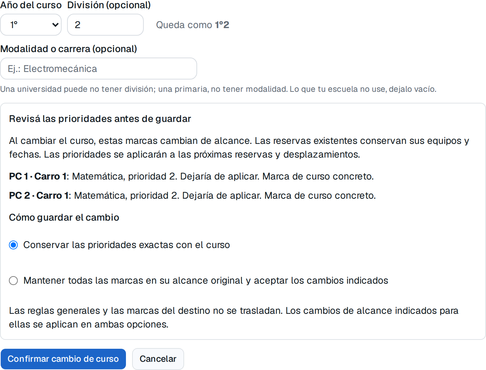
1Corregí el curso
2Elegí qué pasa con las prioridades
3Confirmá el alcance revisado
La revisión permite decidir qué hacer con las prioridades antes de modificar el curso.
Los lugares que no son un curso
Para cambiar el nombre o quitar un lugar, usá las acciones de Espacios.
Sus reservas siguen reconociendo el mismo lugar al renombrarlo. No hace falta
crear ni borrar una materia para que se pueda reservar para Biblioteca o
Dirección.
Dirección, Biblioteca, Preceptoría, un laboratorio, una sala de profesores. Ahí
también se piden computadoras, y no tienen año ni división ni modalidad: son un
nombre y nada más. Van en su propia sección del ciclo,
«Otros lugares de la escuela», abajo de los cursos.
Abrí el ciclo y bajá hasta Otros lugares de la escuela.
Escribí el nombre en Nuevo lugar y tocá
Agregar lugar.
Después se Renombra o se
Elimina, igual que un curso: eliminar solo funciona
si no tiene ninguna reserva hecha.
No llevan materias, y es a propósito
En Dirección no se dicta nada. El sistema no te pide inventar una materia
para poder reservar ahí: se reserva para el lugar y listo. Quien trabaje en uno
de esos lugares lo va a encontrar en el desplegable al registrarse, y cuando
elija uno el formulario no le pregunta ninguna materia.
Es opcional: si en tu escuela solo se reserva para cursos, no hace falta
cargar nada acá. Y al cerrar el año, estos lugares se copian al ciclo nuevo
junto con los cursos.
Solo puede haber un ciclo activo
Para abrir el año siguiente hay que cerrar el actual primero. Es la
operación más delicada del sistema —borra las reservas del año— y tiene su
propio capítulo, el 6: leelo antes de tocar ese botón.
Copiar las materias de un curso a otros
Las divisiones de un mismo año suelen tener las mismas materias. En vez de
cargarlas una por una en cada curso, cargalas en uno y copialas.
Abrí las Materias del curso que ya está completo.
Tocá Copiar estas materias a otros cursos.
Tildá los cursos de destino y confirmá con
Copiar a N cursos.
Copia solo los nombres de las materias. Los docentes asignados no se
copian: quién dicta qué se decide curso por curso. Y no pisa nada — las
materias que el curso de destino ya tenía quedan como están. El sistema te dice
al final cuántas creó y cuántas ya existían, así que copiar dos veces es
inofensivo.
Cargar el año entero de una vez
Si tu escuela tiene treinta cursos, cargarlos a mano es una tarde. Se pueden
bajar y subir en una planilla.
En el ciclo, buscá «Cursos y materias en una planilla» y tocá
Descargar los N cursos: baja un archivo con todos
los cursos que ya tenés cargados y sus materias.
Abrilo con cualquier planilla de cálculo —Excel, LibreOffice, Google Hojas
de cálculo—, agregá las filas que falten y guardalo.
Volvé, elegilo en «Cargar desde una planilla» y mirá la vista previa:
te dice cuántos cursos y materias va a crear antes de tocar nada.
Si está bien, confirmá con Cargar en el ciclo.
Solo agrega, nunca borra
Subir el archivo crea lo que falta y deja como está lo que ya existe. No
renombra ni elimina nada, así que subirlo dos veces no rompe nada y un archivo
al que le falta un curso no te lo borra. Al terminar te dice cuántos cursos y
materias creó, y cuántos ya estaban.
Si le cambiás el nombre a una materia
Revisá después el inventario. Las marcas de «preferente para esta materia»
(capítulo 8) se guardan por el nombre, así que al renombrarla dejan de aplicar y
hay que rehacerlas. La pantalla te avisa en el momento cuántas quedaron
colgadas.
Si un docente pide una materia
No hace falta que lo cargues a mano: puede pedirla desde su perfil y vos la
resolvés en Pedidos de materia (capítulo 14).
6Cerrar el año, con o sin ciclo nuevo
Se hace cuando el ciclo lectivo terminó. Esta operación
borra el detalle de las reservas del ciclo, así que este
capítulo cuenta exactamente qué se lleva puesto y qué no. Leelo entero antes de
hacerlo: no hay botón de deshacer.
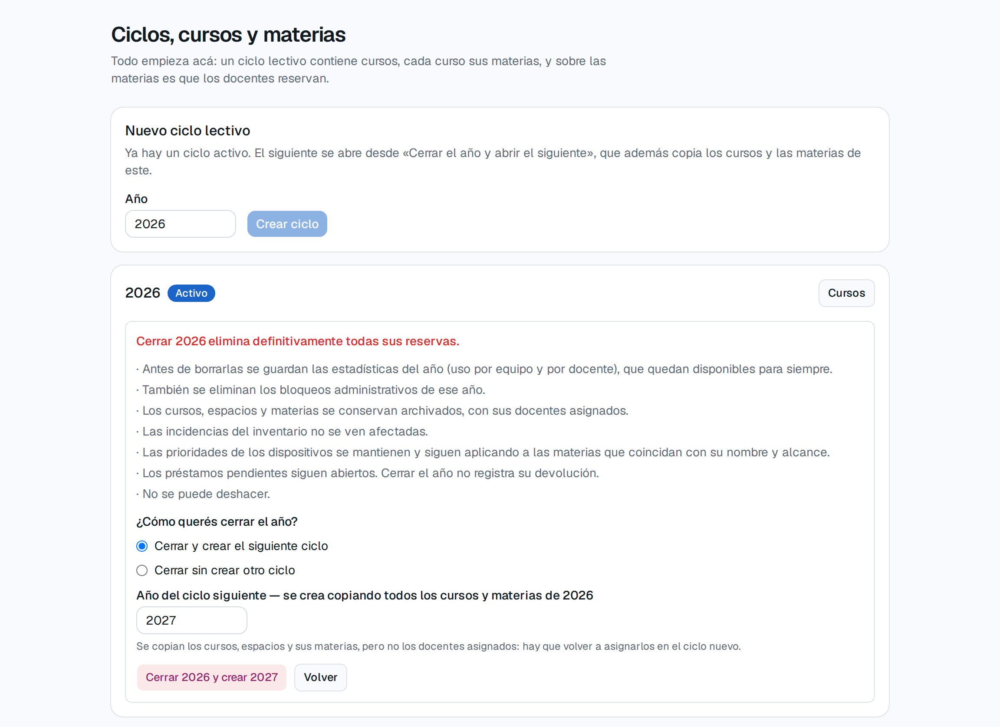
1Elegí si abrís otro ciclo
2Revisá el año de destino
3Cerrar es definitivo: revisá antes
El sistema te dice qué va a pasar antes de que confirmes.
Cerrar el año borra todas las reservas de ese año
Todas: las que ya pasaron y las que estaban por venir. Por eso se hace
cuando el año terminó y no antes — si lo hacés en octubre, las clases
reservadas para noviembre desaparecen sin avisarle a nadie.
Qué se guarda y qué se pierde
Los préstamos conservan la materia, el curso o espacio y el año que tenían
cuando se entregó el equipo, incluso después de cerrar el ciclo o corregir
un nombre. En préstamos antiguos puede aparecer una aclaración de datos
reconstruidos. Si ese vínculo ya no existía, el sistema no inventa una materia
basándose en el destino que alguien escribió.
Se guardan las estadísticas del año, antes de borrar nada: cuánto usó
cada equipo y cuántas horas reservó cada docente. Quedan para siempre en
Reportes, en «Histórico por año».
Se conservan cursos, espacios y materias, archivados, con sus docentes
asignados. No hay que volver a escribirlos para consultarlos.
Los préstamos abiertos siguen pendientes de devolución. Cerrar el año
no significa que las máquinas volvieron: todavía hay que recibirlas.
No se tocan las incidencias del inventario: lo que se rompió y cuándo
sigue estando.
Se pierde el detalle reserva por reserva: qué día, a qué hora y qué
máquina usó cada uno. Del año viejo van a quedar los totales, no la agenda.
Los CSV son resúmenes, no la agenda completa
Podés descargar los reportes antes del cierre para conservar esos totales.
Los archivos de Reportes no contienen cada reserva con su fecha y horario.
Si la institución necesita conservar la agenda completa, coordiná el respaldo
con quien mantiene el sistema antes de cerrar el ciclo.
Cómo se hace
Entrá a Administración → Académico.
En la tarjeta del ciclo activo, tocá Cerrar el año y abrir el siguiente.
Todavía no pasó nada: se abre un recuadro que explica qué va a pasar.
Leé el recuadro. Si te arrepentís, Volver cierra
el recuadro y no cambia nada.
Mirá el campo «Año del ciclo siguiente»:
viene con el año que viene ya escrito. Si lo dejás así, el sistema crea el
ciclo nuevo con los mismos cursos y las mismas materias, y te ahorra cargar
todo de nuevo. Un año vacío, inválido o ya existente impide confirmar.
Para cerrarlo sin abrir otro, elegí expresamente «Cerrar sin crear otro ciclo».
Después tendrás que crear el ciclo nuevo a mano.
Tocá el botón rojo que indica el resultado —por ejemplo,
Cerrar 2026 y crear 2027— para
confirmar. Ahí sí, se cierra.
A los docentes hay que volver a asignarlos
La copia trae los cursos y las materias, pero no quién las da. En el
ciclo nuevo, cada materia arranca sin docentes: entrá a
Académico → Cursos → Materias y asignalos como en el capítulo 5. Hasta
que lo hagas, esos docentes no van a poder reservar.
Cómo saber que salió bien
El ciclo viejo queda con la etiqueta Archivado. Si elegiste crear otro,
el nuevo queda Activo; si cerraste sin crear, no queda ciclo activo.
En Reportes aparece el histórico del año que cerraste. Si se cortó la
conexión al confirmar, recargá y revisá el resultado antes de intentar otro
destino: repetir el mismo cierre conserva el resultado que ya se guardó.
7Los usuarios
En Administración → Usuarios están todas las cuentas, con un filtro por
estado. Arriba a la derecha, Crear otro Admin da de
alta una cuenta de administración directamente, sin que la persona tenga que
registrarse y esperar aprobación.
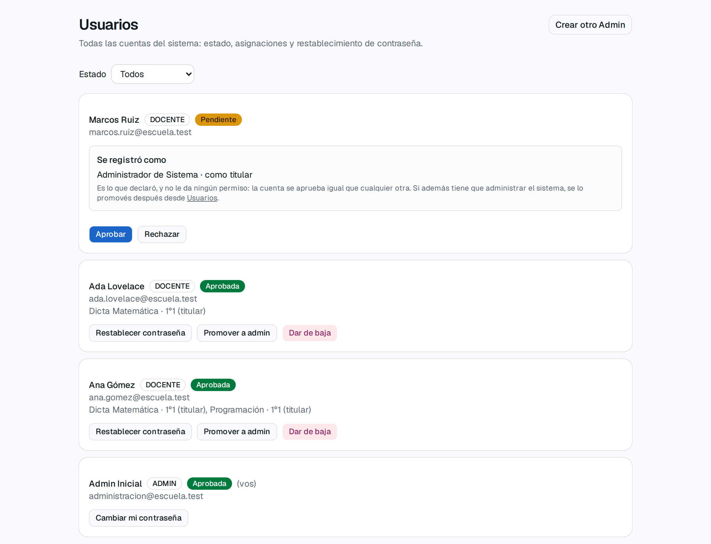
1Filtrá por estado de cuenta
2Generá una contraseña temporal
3Creá otro administrador
Cada cuenta, con su estado y lo que se puede hacer con ella.
Aprobar o rechazar desde acá
Una cuenta pendiente muestra en su ficha qué pidió dictar —la
materia, el curso y si se ofrece como titular o suplente— y los dos botones,
Aprobar y Rechazar. Es la
misma información que ves en «Aprobar las cuentas nuevas» (capítulo 4): decidas
desde donde decidas, estás mirando lo mismo. El rechazo pide confirmación antes
de cambiar la cuenta y permite volver sin rechazarla.
Restablecer una contraseña
Si un docente no puede entrar y el correo de recuperación no le llega, tocá
Restablecer contraseña en su fila, revisá el nombre y el
email y tocá Confirmar. Se cierran sus sesiones y aparece
una contraseña temporal una sola vez: anotala y comunicala a la persona. Al ingresar,
debe reemplazarla por una personal antes de usar el sistema.
Volver cancela la operación antes de confirmar.
Convertir a alguien en Admin
Promover a admin le da a esa persona todo lo que
describe esta guía. Hacelo solo con quien va a atender el laboratorio: un Admin
puede cancelar reservas ajenas y dar de baja equipos.
Es acá donde se resuelve el caso de quien se registró como Administrador de
Sistema (capítulo 4): primero se aprueba la cuenta como cualquier otra, y
después, si corresponde, se la promueve desde esta pantalla. Son dos decisiones
distintas y las tomás vos las dos.
Quitarle los permisos a un Admin
Es lo contrario de promover, y aparece solo en las cuentas que ya son Admin:
Quitar permisos de admin. La persona sigue teniendo su
cuenta y sus materias, y vuelve a ver el sistema como cualquier docente.
Sirve cuando alguien deja de atender el laboratorio pero sigue dando clase. No
hace falta darlo de baja ni crearle otra cuenta: sus reservas y su historial
quedan intactos.
Dar de baja una cuenta
Para alguien que ya no trabaja en la escuela. La cuenta deja de poder entrar,
pero no desaparece: lo que reservó y entregó sigue figurando en el
historial, que es justamente para lo que sirve.
La baja no se puede deshacer
No hay forma de reactivar una cuenta dada de baja. Y si sus materias quedan sin
ningún otro docente, sus reservas futuras se cancelan. El sistema te lo
dice antes de confirmar.
Borrar una cuenta del todo
Eliminar definitivamente aparece únicamente en las
cuentas rechazadas o dadas de baja, y hace lo que dice: la borra y
libera el email para que esa persona pueda registrarse de nuevo.
Existe sobre todo para un caso: rechazaste una cuenta por error. Una
cuenta rechazada no se puede aprobar después, así que sin esto ese email queda
tomado para siempre y la persona no puede volver a registrarse. Eliminala y que
se registre otra vez.
Esto sí borra a la persona
Sus reservas e incidencias se conservan, pero pierden el nombre: quedan
sin dueño en el historial. Si lo que querés es que alguien deje de entrar,
dar de baja alcanza y conserva todo. Eliminar es para liberar el email.
Tu propia cuenta
Sobre vos mismo el sistema no te ofrece ni quitarte los permisos ni darte de
baja: en tu fila solo vas a ver Cambiar mi contraseña,
que abre el formulario personal.
Es a propósito — evita que la escuela se quede sin ningún Admin por un clic, y
que te quedes afuera de esta pantalla sin poder volver.
8El inventario
En Administración → Gestión del inventario se cargan los carros y las
computadoras, y se cambia su estado.
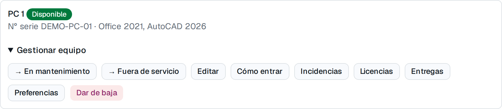
1Editá la ficha del equipo
2Consultá las cuentas de ingreso
3Definí sus prioridades
La ficha de un equipo, con su número de serie, sus programas y sus acciones.
Cargar un carro y sus computadoras
En Nuevo carro, poné el nombre (por ejemplo, «Carro 1») y una
descripción, y tocá Crear carro.
Abrilo con Gestionar equipos.
Agregá cada computadora con su número dentro del carro, su
número de serie y los programas que tiene instalados.
Lo que no está en un carro: «Otros equipos»
El proyector, los cargadores o una notebook suelta se cargan en
Otros equipos, en la misma pantalla, con
Agregar equipo. Se entregan y se reciben igual que
las computadoras. Se les pide:
¿Qué clase de equipo es? — una computadora (notebook,
tablet, PC de escritorio) o otra cosa (proyector, cargador,
parlante). Es lo primero que se elige porque decide el resto: a una
computadora se le piden además los datos de la máquina, y después vas a
poder anotarle sus licencias y con qué cuenta se entra, igual que a una
del carro. A lo demás no, porque no tiene nada de eso.
¿Qué es? — Proyector, Cargador, Notebook… lo escribís vos, y el
sistema te sugiere los que ya cargaste para que no convivan «Proyector» y
«PROYECTOR». Es el nombre de la categoría, y va aparte de la pregunta de
arriba: te deja escribir «Ultrabook» o «Impresora 3D» sin que el sistema
tenga que conocerlas.
¿Cómo lo llaman? — es lo único que lo distingue de otro igual. Si
hay más de uno, numeralos: Cargador 1, Cargador 2.
Número de serie — si tiene. Un proyector trae, y es lo que
sirve para reclamarlo si se pierde; un cargador no trae ninguno. Dejarlo
vacío es normal: es mejor que inventar un valor.
Los datos de la máquina — solo si es una computadora: CPU, RAM,
sistema operativo, software instalado y si está freezada. Son los mismos
campos que en una computadora de carro, y el software instalado es el dato
que un docente mira antes de elegir qué reservar.
Se puede reservar con anticipación — marcalo para un proyector, que
alguien puede querer para una clase del jueves. Dejalo sin marcar para un
cargador: se presta en el momento, y aparecería como ruido cada vez que un
docente va a reservar.
En la lista, las computadoras aparecen separadas del resto. Cada una tiene
los mismos paneles que una del carro: Incidencias,
Licencias, Preferencias y
Cómo entrar. Lo que no es una computadora tiene
solo los que le sirven — las fallas se reportan sobre cualquier cosa, porque
un proyector con la lámpara quemada es una falla igual.
Si te equivocaste de clase, se corrige
Entrá a Editar y cambiala. Marcar como computadora
algo que no lo era hace aparecer los campos vacíos, listos para completar. Al
revés, los datos que ya tenía no se borran: dejan de mostrarse, y
vuelven tal cual si lo volvés a marcar.
Los tres estados de una computadora
Disponible — se puede reservar y entregar.
En mantenimiento — está siendo reparada. Nadie la puede reservar
ni retirar: sigue en el laboratorio y no se le da a nadie.
Fuera de servicio — no anda y no se sabe cuándo va a andar. Tampoco
se reserva ni se entrega.
El estado se cambia con las flechas → En mantenimiento
y → Fuera de servicio de cada equipo. Vale igual para
los otros equipos: un proyector también se rompe, y pasarlo a mantenimiento
no es lo mismo que darlo de baja — la baja lo saca del inventario y libera su
nombre y su número de serie.
Se puede ir y volver
Los tres estados van en cualquier dirección: si una computadora que estaba
fuera de servicio se arregla —le conseguiste la batería, la revisó el
técnico—, la pasás a Disponible y vuelve a circular. Lo único que no tiene
vuelta es Dar de baja, que la saca del inventario.
Lo que no vuelve solo son las reservas que se cancelaron mientras estuvo
fuera de circulación: si el docente todavía la necesita, tiene que reservar de
nuevo.
¿Y si el técnico se la lleva?
Una máquina en mantenimiento o fuera de servicio no aparece en
Entregar sin reserva, a propósito. Para que salga del laboratorio hay otro
botón en Entregas: Sacar un equipo a reparación. Ahí sí
aparece, y te pide que escribas a dónde va — eso es lo que después explica por qué
el equipo no está.
Un aviso de falla no cambia el estado solo
Cuando un docente avisa que una máquina no anda, queda cargada la incidencia,
pero la computadora sigue disponible hasta que vos la muevas. Es a
propósito: quien decide si se puede seguir usando sos vos. Si la falla es real,
pasala a mantenimiento para que nadie la reserve.
Cambiar el número de PC sin cambiar la computadora
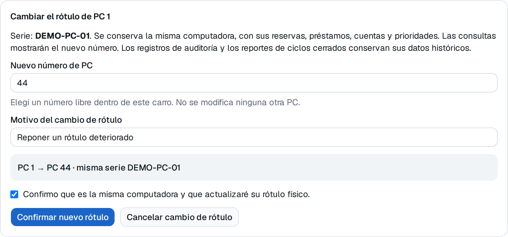
1Indicá el nuevo rótulo
2Confirmá que es la misma computadora
3Guardá el número y conservá su identidad
Corregir el rótulo conserva la serie, las reservas, los préstamos y las prioridades del mismo equipo.
Si necesitás renumerar una máquina, abrí su ficha, tocá Editar y
Cambiar número de PC. Comprobá la serie, escribí un número libre dentro
del carro y el motivo. Confirmá que es la misma computadora y que actualizarás
su rótulo físico; luego tocá Confirmar nuevo rótulo. Podés cancelar el
formulario sin guardar.
La serie, las reservas, los préstamos, las incidencias, las licencias y las
prioridades siguen asociados a la misma PC. Las consultas muestran el número
nuevo. El cambio queda en auditoría con el anterior, el nuevo y el motivo.
Los reportes de ciclos ya cerrados conservan sus nombres históricos. Si el
número está ocupado o alguien renumeró esa PC mientras editabas, se informa
el conflicto.
Consultar el calendario de todas las materias
Entrá a Reservas y tocá Ver calendario. Podés alternar
Semana, Mes y Agenda, ir a una fecha y buscar por materia,
curso o modalidad. Mostrar reservas permite alternar tus clases y las
de todas las materias. Abrí una tarjeta para consultar sus equipos o gestionar
la reserva según los permisos de tu cuenta.
Mostrar canceladas agrega las clases canceladas. Si abrís una y elegís
Gestionar reserva, el listado conserva ese filtro. Los bloqueos que
creaste por separado mantienen sus motivos y equipos aunque compartan horario.
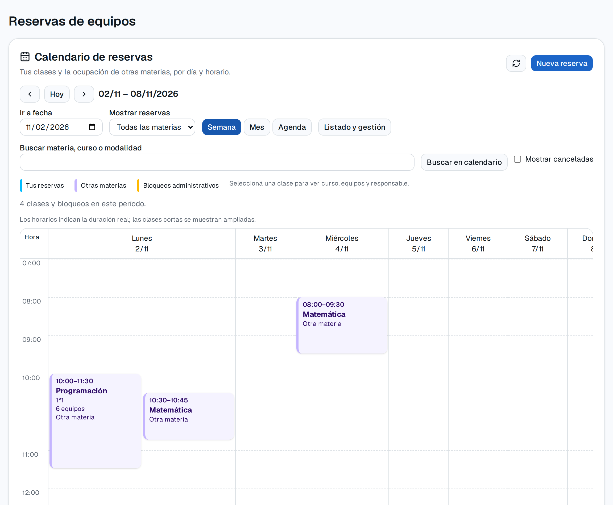
1Elegí el período
2Creá una nueva reserva
3Consultá la clase antes de actuar
El calendario reúne la ocupación de las materias y los bloqueos sin confundir sus operaciones.
En el teléfono, Agenda permite recorrer las clases en tarjetas. Si
elegís Semana o Mes, desplazá la grilla dentro del calendario. El botón
Listado y gestión vuelve a la lista de reservas.
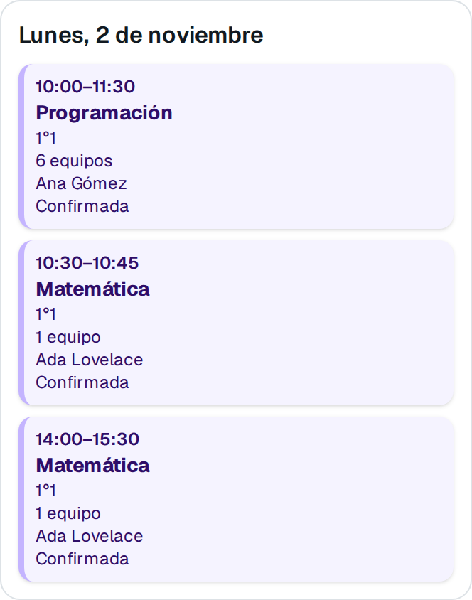
1Tocá la clase para ver su detalle
2Revisá las otras clases del día
Cada tarjeta indica la materia, el curso, el horario y los equipos reservados.
Las otras acciones de cada equipo
Cómo entrar — con qué usuario se abre esa máquina y cuál es su
contraseña. Tiene su propio capítulo, el 9.
Incidencias — las fallas que reportaron sobre esa máquina.
Licencias — el software con vencimiento que tiene instalado.
Entregas — el historial de quién se la llevó y cuándo volvió.
Preferencias — para marcar que esa máquina es la preferida de cierta
materia; al reservar para esa materia aparece primera en la lista.
Dar de baja — para una máquina que ya no existe. No borra su historial,
y su número de serie y su lugar en el carro quedan libres: si te equivocaste, o
si esa notebook vuelve a cargarse como otro equipo porque tiene otro
hardware, la podés crear de nuevo con la misma serie.
Marcar una computadora como preferente para una materia
Sirve para que las máquinas que tienen lo que una materia necesita —el programa
de dibujo, más memoria, el teclado que no está roto— le aparezcan primero al
docente que reserva para esa materia.
La marca no crea una reserva. Cualquiera puede reservar una máquina libre,
pero la marca también define quién puede desplazar a otra materia cuando hay
una competencia por ese dispositivo. Además, para la materia marcada aparece
antes en la lista y se muestra el motivo («Preferente para Matemática de 4°2»).
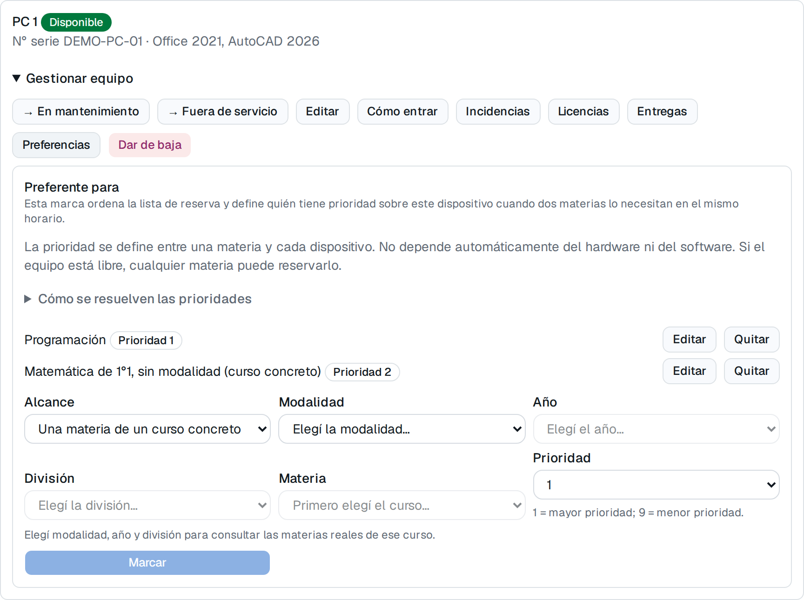
1Elegí el alcance de la marca
2Elegí la materia del catálogo
3Un número menor tiene más prioridad
Las marcas de una máquina, con su alcance y su prioridad.
En Administración → Inventario, abrí el carro con
Gestionar equipos, desplegá la ficha de la máquina
y tocá Preferencias.
Para una materia de un curso concreto, elegí en este orden:
modalidad → año → división → materia. Cada lista se filtra según
los datos reales de Académico. Cambiar un dato anterior limpia los siguientes.
Sin modalidad o Sin división significa que ese curso no tiene
ese dato. No equivale a todas las modalidades o divisiones.
Para abarcar varios cursos, seleccioná Regla general para varios cursos
o espacios. Allí las opciones «Todas» amplían el alcance; por ejemplo,
Matemática de Electromecánica para todos sus años. También permite materias
de espacios. Sólo se guarda si la combinación existe en el ciclo activo.
La prioridad va de 1 a 9: 1 es la mayor y 9 la menor. Se aplica
a cada dispositivo. No se asigna automáticamente por su hardware o software.
Tocá Marcar.
Cada marca queda listada con su alcance. Editar
corrige el alcance y la prioridad; Quitar la saca y
devuelve la máquina al orden de siempre. Para apuntar a otra materia hay
que hacer una marca nueva: eso no es corregir ésta.
Gana la marca más específica
Si una máquina está marcada para «Matemática» y también para «Matemática de
4°2», cuando reserve 4°2 manda la segunda. A igual cantidad de datos, decide la
prioridad.
Qué ocurre si dos materias necesitan el mismo dispositivo
Si está libre, cualquiera puede reservarlo. Si está reservado, una materia con
una marca aplicable y un número menor puede desplazar a otra con un número mayor
o sin marca. En un empate ninguna desplaza a la otra. Los bloqueos administrativos,
equipos ya entregados y reservas que empiezan en una hora o menos quedan protegidos.
El sistema busca sustitutos libres y, si no alcanza, aplica las prioridades de
cada sustituto en cascada. Pueden quedar equipos faltantes; se avisa a los docentes.
La acción Preferencia del carro guarda la marca en
los dispositivos seleccionados del carro. Los equipos que agregues después no
reciben automáticamente esa marca.
Si renombraste una materia: las marcas que quedaron sin materia
Una materia archivada no activa prioridades para las reservas nuevas.
Si la marca sólo coincide con materias de años cerrados, aparece en
Prioridades sin materias vigentes con esa aclaración. Revisala antes
de quitarla: puede corresponder a la estructura del próximo ciclo.
Las marcas se guardan por el nombre de la materia. Si la renombrás desde
Académico, las marcas siguen apuntando al nombre viejo. Si todavía existe
otra materia con ese nombre y alcance, pueden seguir aplicándose a ella. Las
que dejan de coincidir con todas las materias sin archivar aparecen en Prioridades sin materias vigentes.
Por eso, al renombrar, la pantalla te avisa en el momento cuántas marcas
quedaron colgadas. Y arriba de Administración → Inventario aparece
«Prioridades sin materias vigentes» con la lista: qué decía cada marca y
qué máquina es, para poder Quitarla o volver a
marcar esa máquina con el nombre nuevo.
Si no aparece esa sección, no hay nada que hacer
Se muestra solo cuando hay alguna marca colgada. Que no esté es la buena
noticia.
Dar de baja un carro
Cuando un carro se rompe o se reemplaza, se lo saca de circulación: deja de
aparecer en los listados y en la lista de «a qué carro va este equipo».
Primero vaciá el carro. Solo se puede dar de baja si no le queda
ninguna computadora activa adentro: moverlas a otro carro, o darlas de baja
una por una. Si quedan máquinas, el sistema te lo dice y no te deja seguir.
En la tarjeta del carro, tocá
Dar de baja el carro y confirmá.
El nombre queda libre para el carro que lo reemplace: si el «Carro 1» se
rompió y llega uno nuevo, el nuevo se puede llamar «Carro 1» igual.
Se puede deshacer
Abajo de todo, Ver los carros retirados los lista y
los devuelve a circulación con
Devolver a circulación. Lo único que puede fallar es
que otro carro se haya quedado con el nombre mientras tanto — que es justo para
lo que la baja lo liberó. Si pasa, renombrá a uno de los dos.
El calendario de una computadora
Entrá a Computadoras en la barra de arriba, abrí el carro con
Ver equipos y tocá el
Ver calendario de la máquina que te interese: se abre
su semana completa, hora por hora. Es la forma más rápida de contestar «¿esta PC
está libre el jueves a las 10?» sin abrir ninguna reserva.
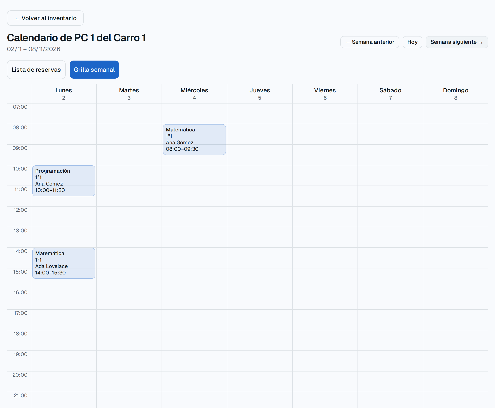
1Consultá otra semana
2Cambiá entre grilla y lista
3Abrí el detalle de una clase
Una semana de una sola máquina: en azul las clases, en rojo los bloqueos.
En azul, las reservas de clase, con la materia y el docente.
En rojo, los bloqueos que hiciste vos o cualquier Admin, con el
motivo que se escribió al bloquear (capítulo 12).
Los huecos en blanco están libres.
El título dice de qué máquina es, con su carro: «Calendario de PC 7 del
Carro 1». Vale mirarlo, porque en cada carro hay una PC con cada número.
Con ← Semana anterior y
Semana siguiente → te movés, y
Hoy te trae de vuelta. Para salir,
← Volver al inventario, arriba de todo. Los docentes ven exactamente
esta misma pantalla.
9Con qué cuenta se entra a cada equipo
Una notebook no se abre sola. Ese dato —con qué usuario se entra y cuál es la
contraseña— suele vivir en la cabeza de una persona y en un papel pegado
adentro del carro. Acá se anota una vez y lo consulta cualquiera que lo
necesite, desde el teléfono, parado frente a la máquina.
Entrá a Administración → Gestión del inventario y abrí el carro con
Gestionar equipos.
En la fila de la máquina, tocá Cómo entrar.
Tocá Agregar cuenta y completá lo que sepas.
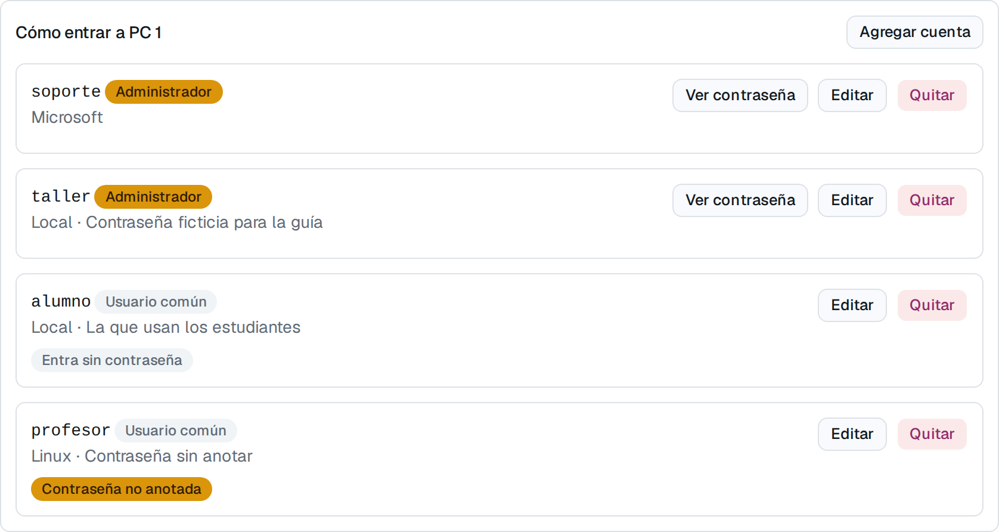
1Anotá una cuenta del equipo
2Revelá la clave si la necesitás
3Corregí los datos de la cuenta
Las cuentas de una máquina, con sus botones para editar y quitar.
También está en «Computadoras»
El mismo panel se abre desde Computadoras, en la barra de arriba: ahí es
donde lo consultan los docentes. La diferencia es que desde
Gestión del inventario lo tenés al lado del resto de lo que se carga de
un equipo, sin cambiar de pantalla en medio de un alta.
Qué se anota de cada cuenta
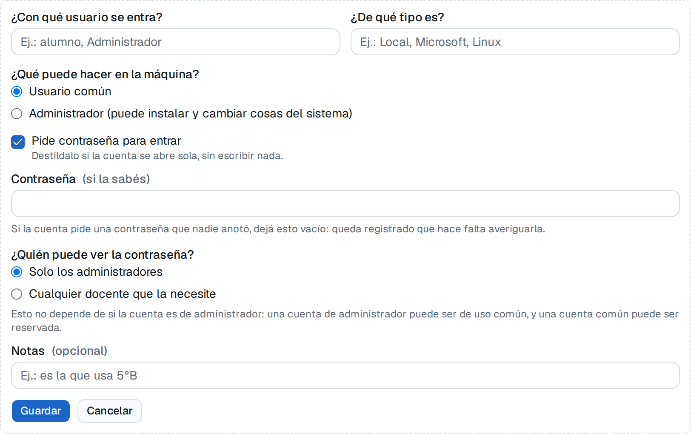
1Anotá el usuario del equipo
2Decidí quién puede ver la clave
3Guardá la ficha de la cuenta
Lo único obligatorio es con qué usuario se entra.
¿Con qué usuario se entra? — es lo único obligatorio: sin eso la
ficha no dice nada que sirva frente a la máquina. Escribilo tal cual hay que
tipearlo.
¿De qué tipo es? — Local, Microsoft, Linux, Google… lo escribís vos,
y el sistema sugiere los que ya usaste. No es una lista cerrada porque no
todas las escuelas tienen las mismas.
¿Qué puede hacer en la máquina? — usuario común o administrador.
Pide contraseña para entrar — destildalo si la cuenta se abre sola.
Contraseña — solo si la sabés (ver más abajo).
¿Quién puede ver la contraseña? — solo los administradores, o
cualquier docente que la necesite.
Notas — opcional: «es la que usa 5°B», «no cerrar la sesión».
Quién ve la contraseña no depende de si la cuenta es de administrador
Son dos preguntas distintas y el sistema no deduce una de la otra, porque se
equivocaría en los dos sentidos. La cuenta de administrador de la máquina del
taller la usa todo el mundo para instalar cosas: esa conviene marcarla
pública. Y una cuenta común puede tener adentro cosas de administración:
esa va solo administradores. Lo que la marca oculta es la
contraseña: la cuenta y su privilegio los ve todo el mundo igual, porque
esconderlos haría que el inventario mienta por omisión.
Tres situaciones con la contraseña, no dos
La máquina no pide contraseña. Destildá «Pide contraseña para
entrar» y listo: en la ficha se lee «Entra sin contraseña».
Pide una y la sabés. Tildala y escribila. Queda guardada
cifrada, y se muestra de a una cuando alguien la pide.
Pide una y nadie la sabe. Tildala y dejá el campo vacío. La ficha
va a decir «Contraseña no anotada», que no es lo mismo que «entra sin
contraseña»: es un pendiente, y así queda registrado que hay que
averiguarla.
Las contraseñas no se muestran todas juntas
Ni siquiera a vos: en la lista no aparece ninguna. Se piden de a una con
Ver contraseña, y cada vez que alguien lo hace
queda registrado quién fue y cuándo. Si viajaran en la lista, abrir la ficha
de una máquina sería mostrar todas sus contraseñas de una vez.
Cuándo aparece el botón «Cómo entrar»
Vos lo ves siempre, en todos los equipos: es la única forma de anotar la
primera cuenta. Un docente lo ve solo en los equipos que ya tienen algo
anotado. Por eso un cargador —que no tiene con qué entrar— no le muestra un
botón que no lleva a ningún lado.
Si el sistema no te deja guardar la contraseña
Si al guardar aparece un aviso diciendo que este sistema no puede guardar
contraseñas de equipos, es que a la instalación le falta una configuración
(CUENTAS_SECRET, en el archivo .env del servidor). La
cuenta se anota igual —usuario, tipo y privilegio—; lo único que no se guarda
es la contraseña. Pasale el dato a quien administra el servidor: está en la
guía de operación.
Cuando algo cambia
Editar — para corregir el usuario, el tipo, el privilegio o quién
puede ver la contraseña. Si dejás el campo de la contraseña vacío, la que
estaba se conserva.
Para borrar solo la contraseña sin borrar la cuenta —cambió y todavía
no sabés la nueva— editala, borrá el contenido del campo y guardá: pasa a
«Contraseña no anotada».
Quitar — pide confirmar antes de borrar el registro y su contraseña
guardada. Cancelar conserva los datos. Esto no elimina la cuenta del
sistema operativo de la máquina.
10Entregar y recibir
Es el trabajo de todos los días y reemplaza al registro en papel. Está en
Administración → Entregas, y lo urgente también aparece en tu pantalla de
inicio.
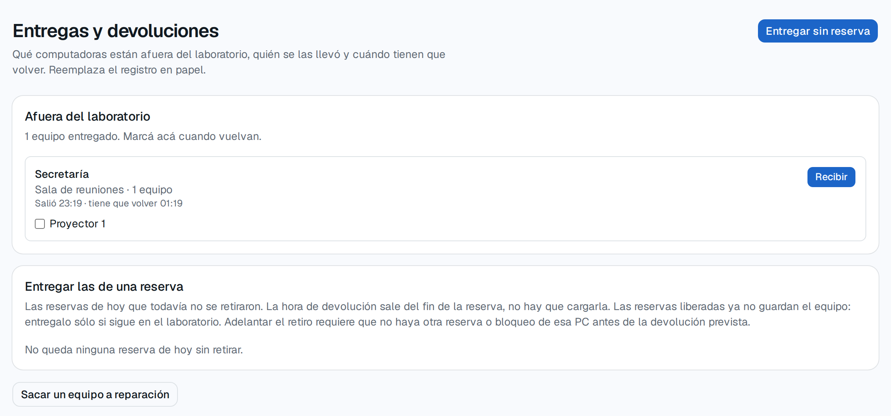
1Registrá un retiro espontáneo
2Registrá una devolución
3Sacá un equipo a reparación
Arriba, lo que está afuera; abajo, las reservas de hoy sin retirar.
Entregar las computadoras de una reserva
El retiro tiene un límite de fecha y hora
Se puede preparar la entrega antes de empezar la clase, pero sólo durante
el día de esa reserva y antes de que termine su horario. Una reserva no
retirada todavía vigente puede entregarse si la computadora está disponible.
No se entrega contra una reserva finalizada, vencida ni de un día futuro.
En clases nocturnas se contempla su continuación después de medianoche.
Si una computadora cambió mientras revisabas la entrega, el sistema te pide
actualizar y confirmar de nuevo antes de registrar movimientos. Una vez que
una reserva tuvo una entrega, no se puede cambiar su computadora, aunque ya
haya sido devuelta: sigue siendo el registro de aquella entrega.
Lo más rápido es desde «Para entregar hoy», en tu inicio: cada clase del
día tiene ahí sus dos botones.
Si el docente se lleva todo lo que reservó, tocá
Entregar todas. Eso es todo.
Si se lleva una parte, tocá Entrega parcial:
aparecen sus computadoras y marcás cuáles salieron.
El botón te dice qué va a pasar —Entregar 3 y liberar el
resto— y arriba, cuántas quedan libres. Confirmá.
Lo que no marcaste queda libre en el acto
Y eso es el punto: esas máquinas vuelven a estar disponibles para otro curso
enseguida, en vez de figurar ocupadas sin estarlo. No afecta a las próximas
fechas de una reserva que se repite: liberás la clase de hoy y nada más.
¿Y si dijo que vuelve por las otras?
Entonces no uses la entrega parcial: entregá lo que se lleva y dejá el
resto como está. La reserva sigue siendo suya y podés entregarle lo que falta
cuando vuelva. La entrega parcial es para decir «esto es todo lo que se llevó»,
y por eso hay que elegirla a propósito.
Desde la pantalla de Entregas se hace lo mismo, con una diferencia: como
ahí se ven varias clases juntas, marcás las computadoras y después tildás
«Es todo lo que se llevó» si querés liberar el resto.
La hora de devolución sale sola
Para una reserva, la hora en que tienen que volver es la del fin de la clase. No
hay que cargarla.
Entregar sin reserva
Para cuando alguien pide algo en el momento: una computadora para un trámite, el
proyector para una charla. La persona no necesita tener cuenta en el
sistema.
Tocá Entregar sin reserva.
Escribí a quién se la entregás. Mientras escribís, el campo te ofrece
las cuentas del sistema: si elegís una, la entrega le queda anotada a esa
persona. Si queda pendiente al cierre de jornada, puede recibir un aviso
según los canales habilitados y sus preferencias. Si quien viene
no tiene cuenta —lo más común: alguien de secretaría, de preceptoría, un
alumno— escribí el nombre nomás: «Secretaría», «Marta (preceptoría)».
Si querés, poné a dónde va y cuándo la devuelve. En «a dónde
va» el campo te sugiere los cursos del ciclo y los lugares de la escuela
—Biblioteca, Dirección, Sección Alumnos—, y podés escribir cualquier otra
cosa. Es lo que dentro de dos meses va a explicar por dónde anduvo esa
máquina. Si no sabés cuándo vuelve, dejá la hora vacía: seguirá en
Afuera del laboratorio y puede incluirse en el resumen de cierre.
Si la persona que elegiste da clase en un solo curso, el destino se
completa solo con ese curso. Es una sugerencia: borrala o cambiala si
se la lleva a otro lado, si la pidió para ella o si no dijo a dónde va.
Tildá los equipos y confirmá. Están agrupados por carro, y si hay muchos
tenés un buscador arriba de la lista. Al confirmar, el cuadro se cierra
solo y arriba te queda escrito qué salió.
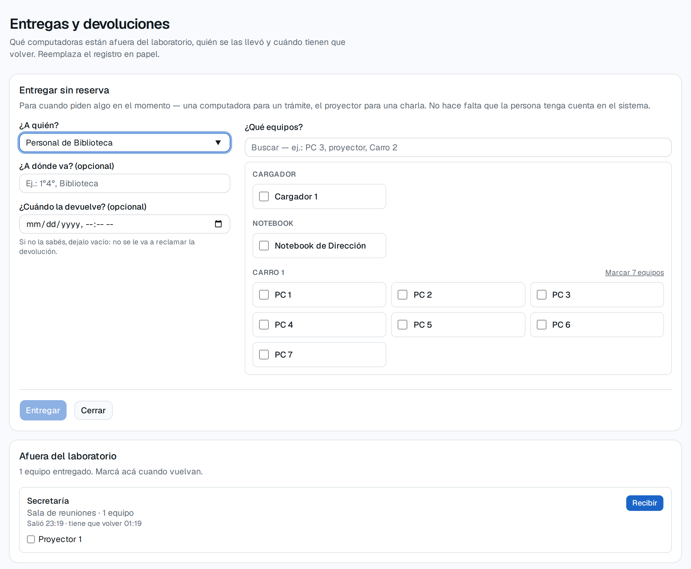
1Identificá al responsable
2Marcá los equipos que salen
3Registrá la entrega
Con el nombre alcanza; lo demás es opcional.
Solo aparece lo que se puede entregar
La lista muestra únicamente las máquinas disponibles que están en el
laboratorio. Lo que ya salió figura en «Afuera del laboratorio», y lo que está en
mantenimiento o fuera de servicio no se presta — ver abajo.
Sacar un equipo a reparación
Cuando una máquina rota se va del laboratorio —se la lleva el técnico, va al
service— eso también se anota, pero no es un préstamo y tiene su propio
botón, abajo de todo en la pantalla de Entregas:
Sacar un equipo a reparación.
Antes que nada, pasá el equipo a En mantenimiento o
Fuera de servicio desde Gestión del inventario. Acá solo aparecen esos.
Escribí quién se lo lleva (el técnico, el service).
Escribí a dónde va y por qué. Este no es opcional: dentro de dos meses
es lo único que va a explicar por qué el equipo no está.
Tildá el equipo y confirmá. Como en la entrega, el cuadro se cierra solo y
arriba te queda escrito qué salió.
Después vuelve como cualquier otro
Mientras está afuera figura en «Afuera del laboratorio», igual que un préstamo
común, y cuando lo traen se recibe con el mismo botón
Recibir. Lo que no se puede sacar así es un
equipo dado de baja: ese ya no es parte del inventario.
Recibir lo que vuelve
La lista está agrupada por quién tiene las máquinas: un docente con su
materia, o el destino al que salió un equipo suelto. Las computadoras no salen
ni vuelven de a una —salen con una clase y vuelven con esa clase—, así que el
caso normal es un botón.
En Afuera del laboratorio, buscá el grupo de quien te está
devolviendo.
Tocá Recibir las 10 (o Recibir,
si es una sola) y listo: vuelven todas juntas.
¿Volvieron algunas nomás? Cada máquina tiene su casilla adentro del grupo:
tildá las que llegaron y usá el botón de abajo, que además te deja escribir
una observación común —«volvió sin el cargador»—.
Si algo no vuelve a horario
El sistema no reclama nada al pasar la hora: diez minutos de demora en
devolver una notebook es lo normal, y un correo por cada una molesta más de lo
que ayuda. Después del cierre de la escuela y del plazo elegido en
Configuración del sistema sale un resumen de lo que quedó afuera
— una sola vez, no todos los días. El plazo inicial es de una hora.
Lo que sí no se va nunca es el número al lado de «Entregas» en el menú:
cuenta las computadoras que están fuera del laboratorio y no baja hasta que
alguien las recibe. Una máquina con un préstamo abierto no puede darse de
baja. Si se perdió o no va a volver, coordiná cómo registrar el cierre del
préstamo con una observación que explique lo ocurrido antes de tramitar la baja.
Todo esto sirve si la pantalla refleja la realidad:
marcá las devoluciones en el momento, no al final del día.
11Licencias de software
Sirve para no enterarte de que una licencia venció el día que un docente no puede
dar su clase.
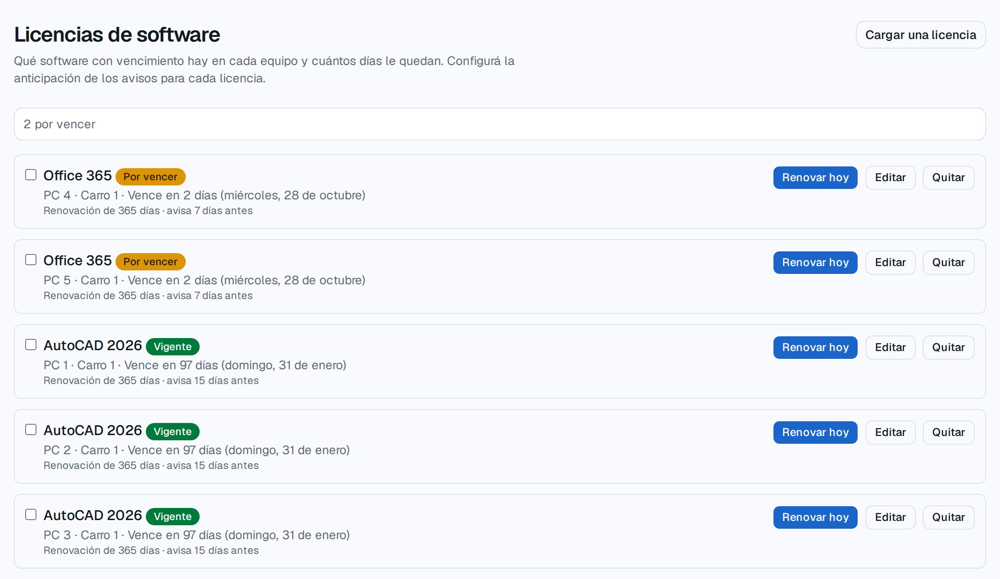
1Cargá una nueva licencia
2Registrá una renovación
3Corregí sus datos
Cada máquina lleva su propio contador. Primero, las que están por vencer.
Cargar una licencia
Tocá Cargar una licencia.
Escribí el software (por ejemplo, «AutoCAD 2027»).
Poné cuántos días dura cada renovación y con cuántos días de
anticipación querés que avise.
Tildá en qué equipos está instalado. Podés marcarlos todos de una vez.
Decí cuándo vence. Hay tres formas: le quedan N días, se renovó el…, o
vence el… Si no lo sabés, elegí «todavía no sé».
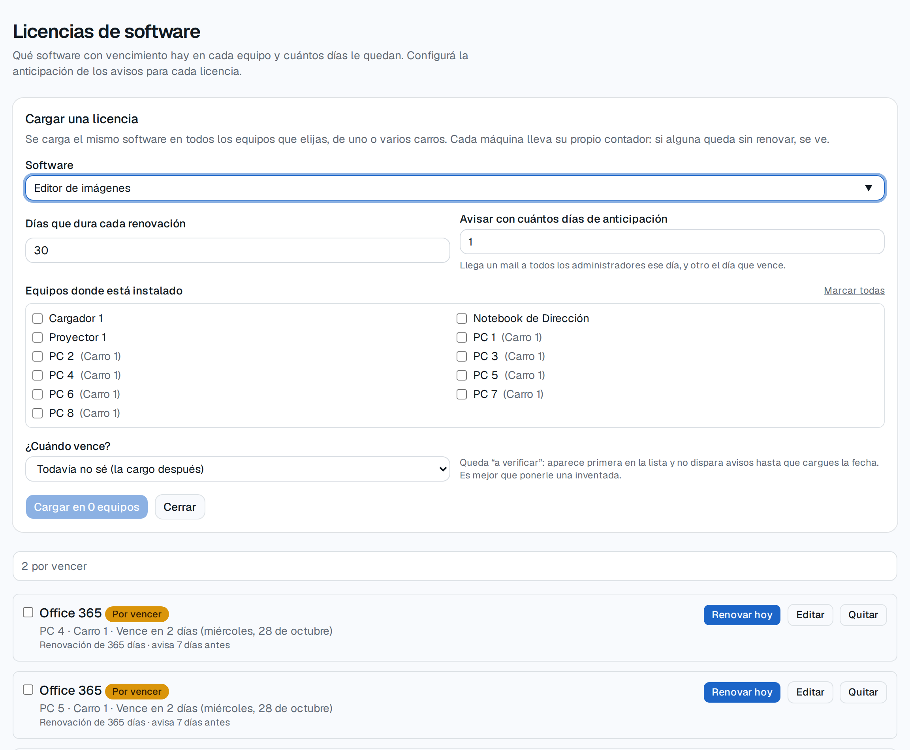
1Indicá el software
2Elegí dónde está instalado
3Definí su vencimiento
Se carga el mismo software en varios equipos de una sola vez.
«Todavía no sé» es una respuesta válida
Una licencia sin fecha aparece primera en la lista, marcada como a verificar, y no
dispara avisos. Es mejor que inventar una fecha: la fecha inventada avisa cuando
no corresponde y calla cuando importa.
Renovar
Cuando renovás una licencia de verdad, tocá Renovar hoy
en esa máquina: el contador arranca de nuevo. Si renovaste varias, se pueden
renovar juntas.
Para varias licencias, marcá las filas y revisá el resumen antes de confirmar:
cuántas seleccionaste y cuántas pueden renovarse. Podés indicar cuándo se
renovaron realmente. Las que todavía no tienen vencimiento deben completarse
primero. Si corregís sólo la duración de una licencia, no estás registrando
una renovación nueva.
Los avisos llegan a todos los Admin
El día que corresponde según la anticipación que cargaste, y otra vez el día del
vencimiento, les llega un correo a todos los administradores.
12Bloquear equipos
Cada bloqueo que confirmás es una operación independiente. Si hacés dos
bloqueos para el mismo horario, se mantienen separados con sus propios
motivos y equipos. Levantar bloqueo actúa sólo sobre el que elegiste.
Los bloqueos antiguos pueden aparecer separados por equipo cuando no se puede
saber cuáles se crearon juntos.
Para cuando el laboratorio necesita las máquinas para otra cosa: una evaluación,
una jornada, una capacitación, un mantenimiento.
Entrá a Administración → Bloquear equipos.
Elegí la fecha y el horario.
Escribí por qué se bloquean. Esto es importante: es exactamente lo que
van a leer los docentes en el aviso de cancelación.
Tildá los equipos. El sistema te marca cuáles ya tienen reserva en ese
horario, y cuáles no se pueden bloquear porque están en mantenimiento o fuera
de servicio. Si son muchos, arriba tenés un buscador, y cada carro un
Marcar N equipos para tomarlo entero de una — saltea solo las que no se
pueden bloquear.
Tocá Revisar bloqueo. Todavía no bloqueaste
nada: primero te muestra qué clases se van a cancelar y de qué docentes,
para que lo veas antes de confirmar.
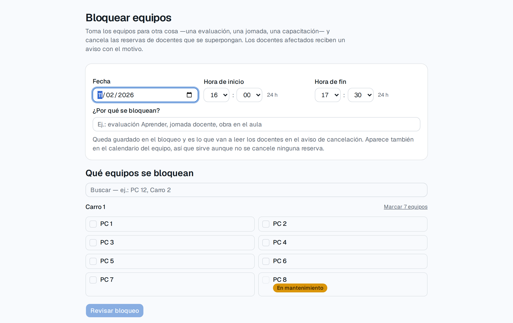
1Definí fecha y horario
2Explicá por qué se necesitan
3Revisá el impacto antes de guardar
Antes de bloquear, se ve qué máquinas tienen reserva en esa franja.
Bloquear cancela clases de otros
Las reservas que se pisan con el bloqueo se cancelan, y a cada docente le llega un
aviso con el motivo que escribiste. Escribilo pensando en que lo lee alguien que
se acaba de quedar sin computadoras para su clase.
Se cancelan máquinas, no la clase entera
Si bloqueás dos de las seis computadoras de una clase, las otras cuatro le quedan
reservadas al docente, y el aviso se lo dice.
Para levantar un bloqueo antes de tiempo, buscalo en Reservas y usá
Levantar bloqueo: los equipos vuelven a estar
disponibles.
13La jornada de la escuela
Son los días y las horas en que la escuela está abierta. Las reservas fuera de ese
horario se rechazan solas.
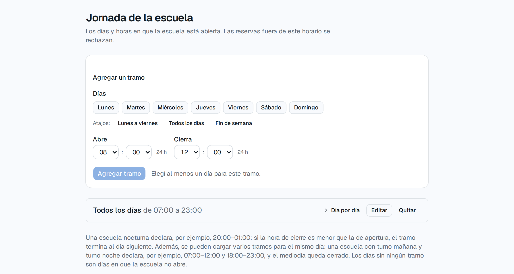
1Elegí los días de apertura
2Indicá la hora de apertura
3Editá un tramo existente
Se carga por tramos: qué días, desde qué hora y hasta cuál.
Entrá a Administración → Jornada de la escuela.
Tildá los días del tramo. Hay atajos: «Lunes a viernes», «Todos los
días», «Fin de semana».
Poné a qué hora abre y a qué hora cierra.
Tocá Agregar tramo. Repetí para cada tramo distinto.
Dos casos que conviene conocerTurno mañana y turno noche: cargá dos tramos para el mismo día —por
ejemplo 07:00–12:00 y 18:00–23:00— y el mediodía queda cerrado.
Escuela nocturna: si la hora de cierre es menor que la de apertura
—20:00–01:00—, el tramo termina al día siguiente.
Mientras no cargues nada, no hay límite
Sin horario declarado se puede reservar cualquier día y a cualquier hora. Por eso
el sistema te lo va a pedir cada vez que entres, hasta que lo cargues. Podés
postergarlo y trabajar igual —sirve para probar el sistema sin inventar un
horario que todavía no sabés— pero el pedido vuelve en la próxima entrada.
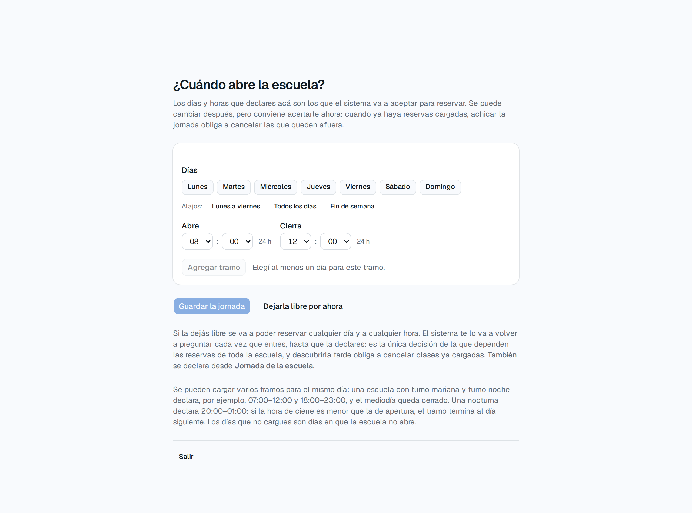
1Elegí los días
2Cargá la hora de apertura
3Guardá la jornada institucional
Lo primero que ves si la escuela todavía no tiene horario
cargado. Se puede declarar acá mismo o dejarlo para después.
Si cambiás el horario y ya hay clases reservadas
El sistema no cancela nada por su cuenta. Antes de guardar te muestra
cuántas clases quedan afuera y de cuántos docentes, con la lista, y
recién ahí decidís.
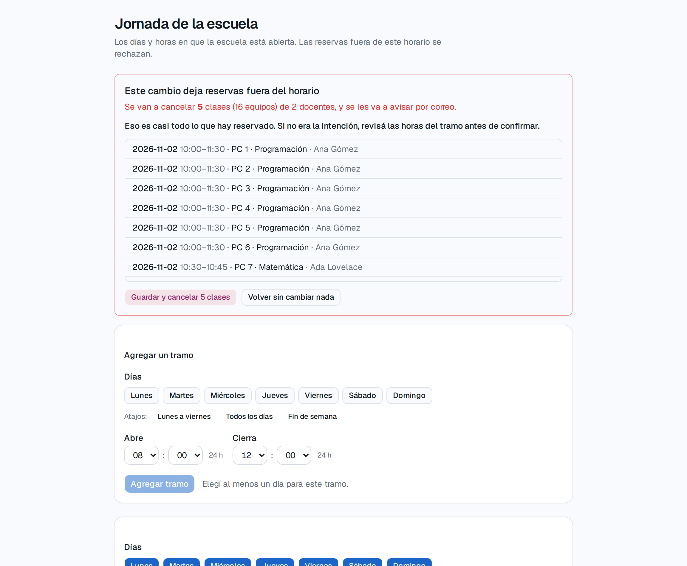
1Volvé si necesitás revisar
2Este botón cancela las clases indicadas
Se cuenta en clases; los equipos van al lado porque una clase
puede tener varias computadoras.
Ampliar el horario no afecta a nadie y no te pregunta nada.
La clase entra entera o no entra. Si achicás a 13:00–15:00, una clase
de 13:00 a 16:00 se cancela completa: no se le recorta la última hora.
La clase que está en curso no se toca. Termina.
A cada docente le llega un correo explicando por qué.
Si dice que se cancela casi todo, frená
Un cambio real de horario rara vez se lleva puesta la escuela entera. Cuando el
cartel avisa que es casi todo lo reservado, revisá las horas del tramo antes de
confirmar: casi siempre es un número mal cargado.
Ojo con las computadoras ya entregadas
Si alguna de las clases que se cancelan ya tiene sus máquinas entregadas,
el sistema te lo avisa con el nombre de quien las tiene. El préstamo no se
cancela —la computadora está afuera y se recibe como siempre— pero conviene
avisarle a esa persona a mano, antes de que se entere por el correo.
14Pedidos para dictar una materia
Un docente puede pedir, desde su perfil, que lo anoten en una materia. Acá se
resuelven.
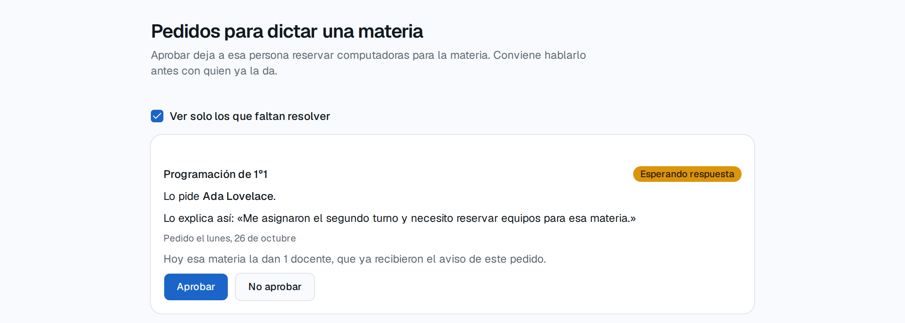
1Mostrá sólo los pendientes
2Revisá y aprobá la asignación
3Rechazá si no corresponde
Cada pedido trae el motivo que escribió el docente.
Entrá a Administración → Pedidos de materia.
Cada pedido dice qué materia es —con su curso— y quién la pide.
Leé el motivo. Si la materia ya la da otro docente, a esa persona también le
llegó el aviso.
Hablalo antes de aprobar, si hace falta. El sistema no reemplaza esa
conversación.
Aprobalo o rechazalo. Al aprobar, esa persona queda habilitada a reservar para
esa materia.
Si la materia no existe todavía
El docente puede pedir una materia que no está cargada, describiéndola. En ese
caso, primero creala en Académico y después resolvé el pedido.
15Pedidos de ayuda y mensajes
Es el buzón por donde los docentes piden ayuda, avisan que algo no anda o
proponen mejoras. Vive dentro de Avisos.
Entrá a Avisos.
En Pedidos de ayuda, tocá
Ver conversaciones. Viene tildado «Ver solo lo que
falta contestar».
Abrí una conversación con Ver. Vas a leer todo lo
que se dijo, en orden.
Escribí tu respuesta abajo y tocá Responder.
Cuando el tema esté terminado, tocá
Dar por resuelta.
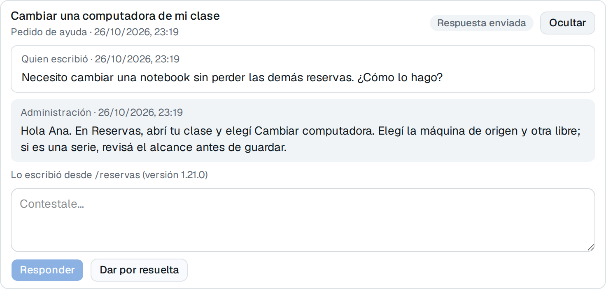
1Escribí la respuesta
2Enviá el mensaje
3Cerrá el pedido cuando esté resuelto
La conversación completa: lo que escribió el docente y lo que
contestaron.
Contestar no cierra el tema
Podés contestar las veces que haga falta; recién se cierra cuando alguien la da
por resuelta. Y si el docente vuelve a escribir sobre una conversación resuelta,
se reabre y vuelve a aparecer en tu lista. Nada se pierde de vista.
Estos correos no se pueden apagar
Los pedidos de ayuda le llegan por mail a todos los Admin siempre, y la respuesta
le llega al docente siempre. Es el único canal por el que alguien pide auxilio:
si se pudiera apagar, dejaría de serlo.
Cada conversación te dice desde qué pantalla la escribieron y con qué versión del
sistema. Cuando alguien reporta algo raro, ese dato suele ser la mitad de la
respuesta.
16Reportes
Para responder preguntas que en papel no se podían responder: cuánto se usa cada
máquina, quién reserva, qué se rompe.
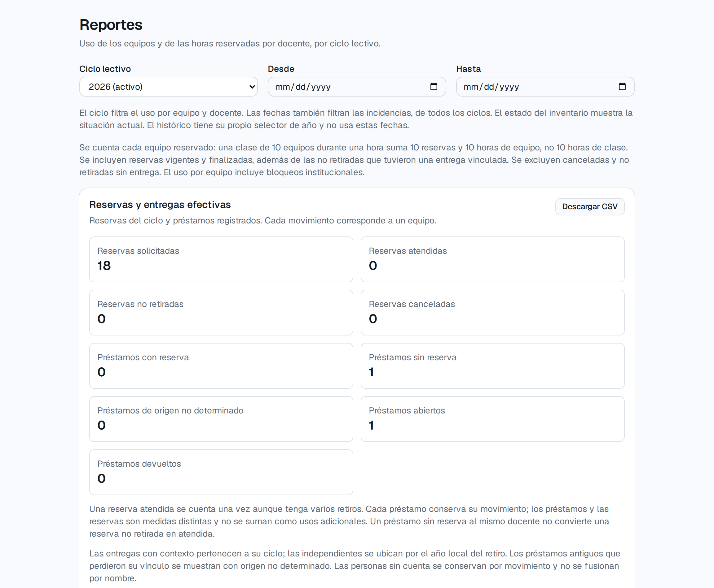
1Elegí el año lectivo
2Acotá el período si hace falta
3Descargá los datos para analizarlos
Reportes de uso y fallas. Cada bloque explica sus unidades y el alcance de las fechas.
Uso por equipo — reservas de esa máquina y duración reservada. Incluye
reservas futuras; no mide horas de encendido ni uso físico comprobado.
Horas por docente — tiempo reservado por equipos. Una clase de una
hora con seis computadoras suma seis horas de equipo, no seis clases.
Incidencias por equipo y por carro — dónde se concentran las fallas.
Estado del parque — cuántas disponibles, en mantenimiento y fuera de
servicio.
Qué se rompe — las fallas agrupadas por tipo.
Histórico por año — se genera solo al cerrar un ciclo lectivo.
Las fechas filtran el uso y las incidencias. El estado actual del inventario
y los históricos tienen su propio alcance: leé la aclaración de cada bloque.
Cargando, un error y una lista vacía son situaciones distintas. Si falla
una consulta, usá Reintentar; no descargues datos de una consulta anterior.
Todo se puede bajar
Cada reporte tiene Descargar CSV: se abre con Excel o
con Google Sheets, para armar un informe o presentarlo en una reunión.
17Quién hizo qué: el registro
El sistema anota cada acción importante: quién la hizo, sobre qué, cuándo y
desde qué conexión. Es donde se contesta «¿quién borró esto?» — que es una
pregunta que aparece justo cuando ya nadie se acuerda.
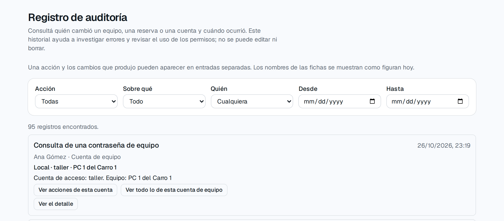
1Filtrá la acción que buscás
2Elegí sobre qué se actuó
3Abrí el cambio registrado
Cada línea dice qué pasó, quién lo hizo y desde dónde.
Entrá a Administración → Auditoría. Arriba están los filtros y abajo la
lista, de lo más nuevo a lo más viejo.
Acción — qué se hizo: «Cuenta aprobada», «Equipo dado de baja»,
«Curso eliminado». La lista solo ofrece las cosas que de verdad pasaron en tu
escuela, así que no vas a elegir una y encontrar cero resultados.
Sobre qué — sobre qué clase de cosa: un equipo, un curso, una cuenta.
Quién — la persona, elegida por su apellido de una lista.
Desde y Hasta — el período.
Las líneas con información adicional traen Ver el detalle.
Los cambios se explican con nombres comprensibles y una tabla de
Dato / Antes / Después. Si un registro antiguo no conserva los valores,
se indica; las contraseñas y los códigos no se muestran.
Cuando la acción es sobre algo concreto
—una computadora, un curso—, trae también un botón que arma la
historia completa de esa ficha: todo lo que le pasó a esa máquina, de
principio a fin. Es la forma de reconstruir qué le viene pasando a una
computadora que da problemas.
Una acción puede producir varias líneas: una describe la operación y otras sus
cambios. Eso no significa que alguien haya repetido la acción. Los nombres de
las fichas corresponden a los que tienen hoy. Sin usuario identificado
indica que el registro no guardó quién actuó; puede ser una tarea automática o
un cambio realizado fuera de la aplicación. La dirección de conexión puede
ser compartida por varias personas de la escuela.
No se puede editar ni borrar
Desde esta pantalla el historial es de sólo lectura.
Tampoco hace falta mantenerlo: se escribe solo.
Si una línea dice «Una cuenta que después se eliminó»
Es que quien hizo esa acción ya no tiene cuenta en el sistema. La acción queda
igual: que la persona se haya ido no borra lo que hizo.
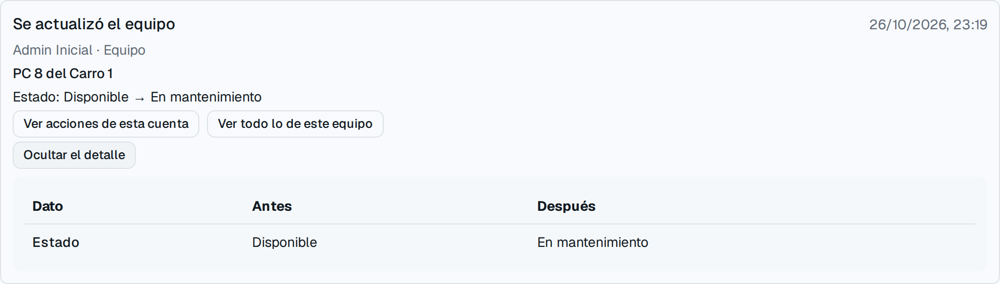
1Compará el valor anterior
2Con el valor que quedó guardado
El detalle muestra qué dato cambió, su valor anterior y el nuevo cuando quedaron registrados.
Desde una entrada también podés consultar la actividad de esa persona,
incluso si la cuenta se eliminó. Cambiar el tipo de ficha limpia el filtro
de la ficha anterior. Si no cargan las personas o las acciones del selector,
reintentá ese catálogo: un error no significa que no haya actividad.
18Tus horarios de atención
Los docentes tienen una pantalla que les dice en qué días y horarios está cada
Admin. La cargás vos, para vos — y además es lo que le dice al sistema cuándo
puede confiar en lo que ve.
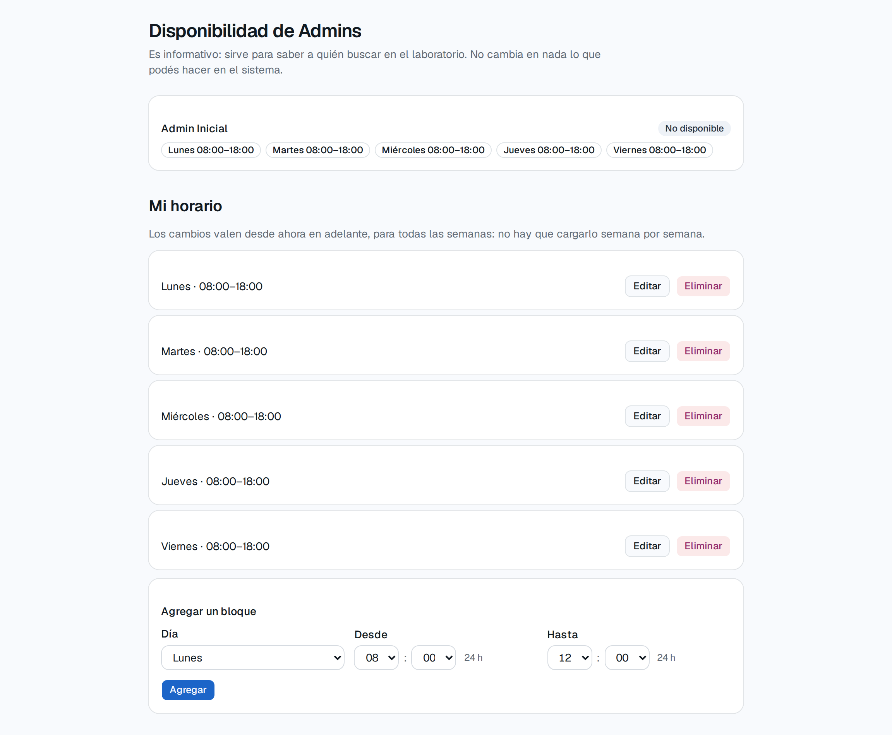
1Corregí tu horario habitual
2Elegí el día que atendés
3Agregá el bloque de atención
Tu horario, cargado por vos; los docentes lo ven en «Horario Admins».
Entrá a Horario Admins, en la barra de arriba.
Cargá tus tramos: qué días y de qué hora a qué hora atendés.
Si un día puntual no vas a estar, cargalo abajo, en Excepciones.
Cuando un día se sale de la rutina
El horario de arriba vale para todas las semanas. Para los días sueltos hay dos
formas, según cuándo te enteres:
Hoy no estoy — un solo botón,
No estoy disponible ahora, para cuando el día ya
empezó: llegaste tarde, te tenés que ir, no vas a poder venir. Vale solo para
hoy y no toca tu horario de siempre.
Un día puntual distinto — para avisar con anticipación. Elegís la
fecha y si ese día no venís o venís en otro horario, y podés
escribir el motivo, que es lo que va a leer el docente.
Si cargás dos veces la misma fecha, la última reemplaza a la anterior.
Esto no es solo informativo: el sistema depende de que esté al día
No cambia nada de lo que vos podés hacer —reservar, entregar y aprobar funcionan
igual, estés o no—, pero sí decide si el sistema actúa solo.
Si una computadora no se retiró al cumplirse el plazo configurado desde el
inicio de la clase, su reserva puede pasar a No retirada y el equipo
queda libre. El plazo inicial es de cuarenta minutos y se cambia desde
Configuración del sistema. Esto solo ocurre si la clase todavía está
en curso y el mostrador figura atendido. Se evalúa cada computadora: las
que tienen una entrega registrada conservan su reserva, aunque ya se hayan
devuelto; las otras pueden liberarse.
El día que faltás y te cubre un preceptor o un directivo que prefiere el papel,
nadie anota nada — y sin esta pantalla el sistema leería ese silencio como
«ningún docente vino» y les sacaría las reservas a todos. Por eso, si
ningún Admin figura de guardia en ese momento, el sistema no libera
reservas por falta de retiro. Los recordatorios de próximas clases siguen
funcionando según las preferencias de cada docente. Las entregas y
devoluciones hechas a mano deben registrarse para que el inventario y los
reportes reflejen lo ocurrido.
Por eso importan las dos cosas: cargar tu horario, y declarar cuando
faltás. Si no lo declarás, el sistema cree que estás y sigue actuando.
Si todavía nadie cargó horarios
El sistema funciona como siempre. Que nadie haya cargado nada no es lo mismo que
decir que no hay nadie: es una escuela que todavía no configuró esto, y ahí no
se apaga nada.
Elegir los plazos de las comprobaciones automáticas
En Administración y configuración abrí Configuración del sistema.
Cualquier Admin puede cambiar estos valores desde el formulario, sin editar
archivos del servidor:
Espera para retirar una reserva: minutos desde el comienzo de la clase
antes de liberar una computadora que no se retiró, con las condiciones
explicadas arriba.
Antelación del recordatorio: cuántos minutos antes de la clase se
prepara el aviso para quienes activaron esa preferencia.
Espera después del cierre de la escuela: minutos entre el fin de la
jornada y el aviso por equipos que siguen afuera.
Hora del aviso si no hay jornada declarada: horario alternativo para
una institución que todavía no cargó su jornada.
Hora desde la que se avisan licencias: hora local a partir de la cual
se revisan los vencimientos. La duración y los días de anticipación se
eligen en cada licencia.
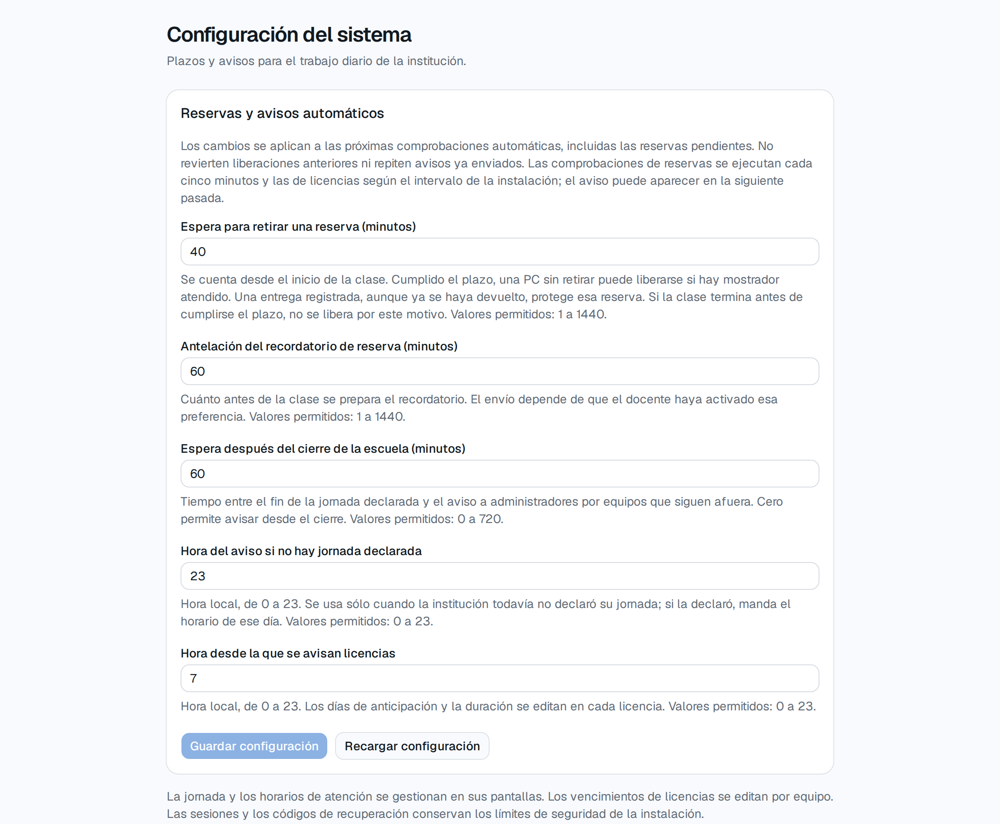
1Ajustá la espera para retirar
2Elegí cuándo recordar una clase
3Aplicá los plazos a la institución
Los plazos se administran desde el sistema y se guardan para toda la institución.
Revisá los valores y pulsá Guardar configuración. El cambio se usa en
las próximas comprobaciones, también para reservas pendientes. No recupera
reservas ya liberadas ni repite avisos enviados. Las reservas se comprueban
cada cinco minutos, por lo que una liberación puede aparecer en la pasada
siguiente. Las licencias siguen el intervalo definido para la instalación.
Si otro Admin guardó mientras editabas
El sistema evita reemplazar sus valores con una versión anterior. Volvé a
cargar la configuración, revisá los cambios y guardá otra vez.
19Tus avisos y tus correos
La acción Responder consultas, en la barra o el menú del teléfono,
abre Consultas de docentes dentro de Avisos. Desde esa bandeja
leés y respondés las conversaciones. El docente entra por Pedir ayuda
para escribir y consultar sus propios mensajes.
Un Admin recibe, además de sus propios avisos, los del laboratorio: cuentas
pendientes, licencias por vencer, pedidos de ayuda, equipos que quedaron
afuera al cerrar.
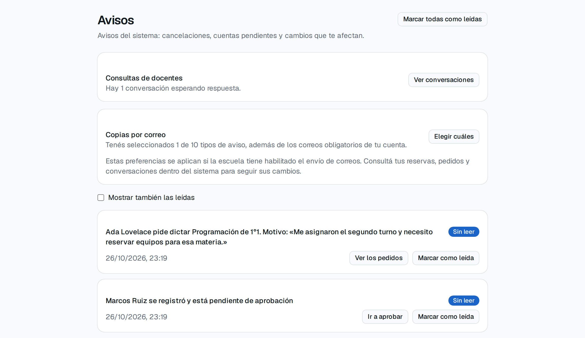
1Revisá las cuentas pendientes
2Atendé las consultas
3Marcá lo que ya revisaste
Los avisos de administración, más el buzón de pedidos de ayuda.
Si te llegan demasiados correos, en Copias por correo →
Elegir cuáles podés apagar los que no querés recibir
por mail cuando el envío esté habilitado. Los avisos de reservas, pedidos y
conversaciones siguen disponibles dentro del sistema. La recuperación de
contraseña se inicia desde la pantalla de acceso.
Dos que conviene dejar encendidos
El de cuentas pendientes, porque su demora la sufre un docente que no puede
entrar, y el de licencias por vencer, porque avisa con tiempo de algo que
después no se resuelve en el momento.
20Tu perfil
Un Admin también tiene su cuenta, y se maneja igual que la de cualquier docente.
Se llega desde tu inicial o tu foto, arriba a la derecha, en
Mi cuenta, que abre directamente tu perfil.
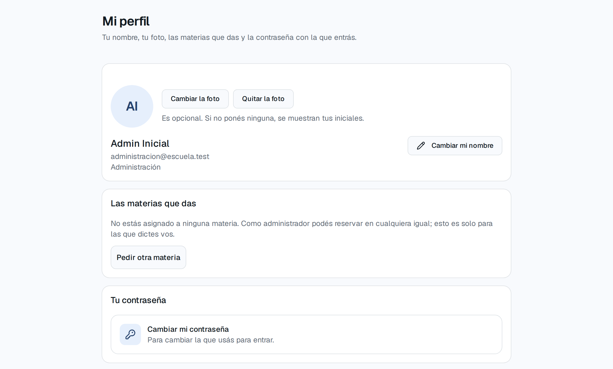
1Actualizá tu foto
2Corregí tu nombre
3Cambiá tu contraseña
Tu foto, tu nombre, tus materias y tu contraseña, todo en un lugar.
Tu foto
Cambiar la foto y Quitar la
foto. Es opcional: si no ponés ninguna, se muestran tus iniciales. Sirve
para que un docente que no te conoce sepa a quién está buscando en el
laboratorio.
Tu nombre
Cambiar mi nombre corrige tu nombre y tu apellido.
Útil si quedaron mal escritos al crear la cuenta: es el nombre que ven los
docentes en Horario Admins y al pie de los avisos que mandás.
Las materias que das
Si además de administrar el laboratorio das clase, tus materias aparecen acá y
podés reservar como cualquier docente. Y si te falta alguna, la pedís desde
Pedir otra materia — sí, el pedido lo resuelve un Admin, que
probablemente seas vos mismo u otro compañero.
Tu contraseña
Cambiar mi contraseña. Te pide la actual y la nueva
dos veces.
Si te olvidaste la tuya
Otro Admin puede resetearte la contraseña desde Usuarios. Si sos el único
Admin, la salida es el correo de recuperación de la pantalla de entrada — otra
razón para que la escuela tenga más de un Admin.
21Una rutina que funciona
No hace falta mirar todo todos los días. Con esto alcanza.
Al abrir el laboratorio
Mirá tu pantalla de inicio: qué hay para entregar ahora y qué quedó
afuera de ayer. Si hay algo afuera que tenía que haber vuelto,
reclamalo.
Durante el día
Entregá y recibí en el momento. Es lo único que, si se hace tarde,
deja de servir.
Al cerrar
Revisá que no quede nada en «Afuera del laboratorio» que en realidad ya
volvió.
Una vez por día
Mirá Aprobación (cuentas nuevas) y Avisos (pedidos de ayuda sin
contestar).
Una vez por semana
Pasá por Licencias y por las incidencias de los equipos: qué
hay para renovar y qué máquina hay que mandar a arreglar.
Al empezar el año
Cerrá el ciclo anterior, creá el nuevo, cargá cursos y materias, y asigná los
docentes. Revisá también la jornada si cambiaron los turnos.
La regla de oro
El sistema es útil en la medida en que lo que está en pantalla coincide con lo que
pasa en el laboratorio. Todo lo demás —los avisos, los reportes, los reclamos
automáticos— sale de ahí.
22Si algo no sale como esperabas
Dice «No pudimos abrir esta pantalla»
Tocá Recargar la página para volver a intentarlo. También podés usar
Volver al inicio. Si sigue pasando, contactá al responsable del
sistema e indicá qué pantalla intentabas abrir.
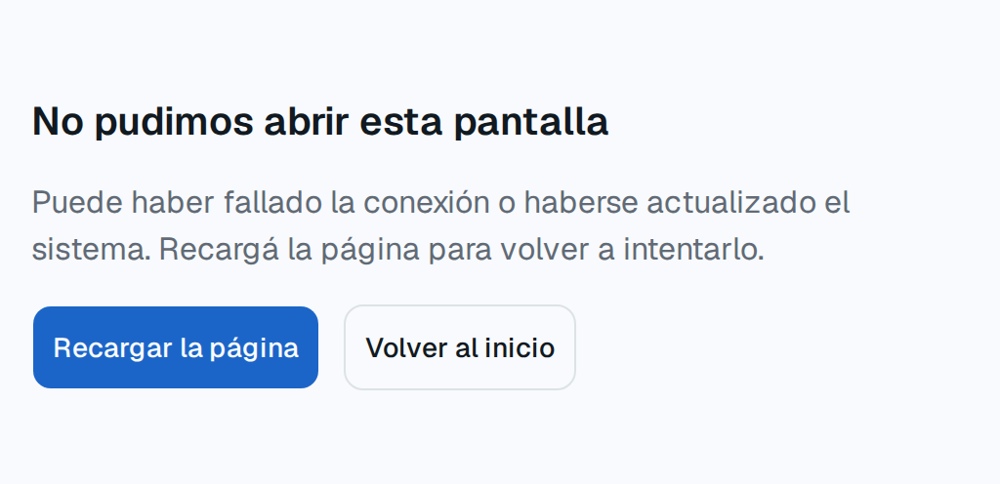
1Recargá la pantalla
2Si hace falta, volvé al inicio
El sistema ofrece volver a intentar la carga o regresar al inicio.
Un docente dice que no puede reservar
Casi siempre es que no está asignado a ninguna materia del ciclo activo.
Revisalo en Académico, en la materia que corresponda. Lo segundo más
común: su cuenta quedó sin aprobar.
Un docente no recibe los correos
Que revise «correo no deseado». Después, que mire en Avisos → Copias por
correo si apagó esa familia de mensajes. Los avisos siempre están dentro del
sistema, aunque el correo no llegue.
Una computadora aparece disponible y en realidad está rota
La incidencia que cargó el docente no cambia el estado sola. Entrá a
Gestión del inventario y pasala a En mantenimiento.
Alguien devolvió una computadora y sigue figurando afuera
Falta marcarla como recibida en Entregas. Seguirá en la lista hasta
que registres la devolución; el aviso de cierre no se repite cada día.
Necesito las máquinas para una evaluación y ya están reservadas
Usá Bloquear equipos con un motivo claro. Las reservas que se pisan se
cancelan y a cada docente le llega el aviso. Si podés, avisales antes por otro
lado: el sistema informa, no reemplaza el trato.
Me equivoqué al bloquear
Buscá el bloqueo en Reservas y tocá Levantar bloqueo. Ojo: las
reservas que se cancelaron no vuelven solas; hay que avisarle al docente que
puede reservar de nuevo.
No puedo crear el ciclo del año que viene
Solo puede haber un ciclo activo. Al cerrar el actual, elegí Abrir el
siguiente ciclo e indicá el año: esa operación también lo crea. Si elegís
cerrar sin abrir otro, podés crear el nuevo después.
Se rompió algo del sistema
Contactá al responsable del sistema. Indicá qué pantalla estabas usando,
qué esperabas y qué ocurrió, junto con la versión que aparece al pie.
23Las palabras que vas a ver
Ciclo lectivo
El año escolar. Contiene los cursos, y solo puede haber uno activo. Al
cerrarlo, lo de ese año queda como histórico.
Curso y materia
1°1 —o 4°2, o «2°» a secas si tus cursos no se dividen— es un curso; Matemática de ese curso es una materia. Los docentes reservan para
una materia, no para un curso.
Carro y equipo
El carro es el mueble con las computadoras. Equipo es cualquier cosa que se
preste: una computadora, el proyector, un cargador.
Reserva
El derecho a usar unas computadoras en una franja horaria. No implica tenerlas
en la mano.
Entrega y devolución
Dónde está físicamente la máquina. Es lo que reemplaza al cuaderno: una
reserva puede existir sin que nadie haya retirado nada.
Bloqueo
Tomar equipos para otra cosa en una franja, cancelando las reservas que se
pisen. Siempre lleva un motivo, que es lo que leen los docentes.
Incidencia
El reporte de que una máquina no anda. Queda cargada en el equipo y no cambia
su estado por sí sola.
Licencia
El permiso de uso de un programa, con vencimiento. Cada máquina lleva su
propio contador.
Cuenta de un equipo
Con qué usuario se entra a esa máquina. No es la cuenta del sistema: son
dos cosas distintas y una persona usa las dos.
Jornada
Los días y horarios en que la escuela abre. Lo que queda afuera no se puede
reservar.
Si algo de esta guía no coincide con lo que ves
El sistema se sigue mejorando, así que puede que una pantalla haya cambiado.
Comentáselo al responsable del sistema para corregir la pantalla y esta guía.